Getting started
Paula's Revenge is a sample tracker of up to 16 tracks for jungle, drum & bass and anything else that wants the crunchy sound of the Amiga's Paula chip and the old Akai samplers. You write music as lines of notes and commands that play from top to bottom, one block at a time, in the order the song lists them.
New to trackers? Read the screen and pattern chapters, then work through the Tutorials: eight walk-throughs from a first loop to a rendered track. The FX tricks chapter is the cookbook to dip into afterwards.
Install
- Open Releases on the right of the GitHub repo page. Each release has both versions:
PaulasRevenge-macOS.zipfor a Mac andPaulasRevenge-Windows.zipfor a PC (Windows 10 or 11, 64-bit). - Mac: follow
INSTALL.txtinside: copy the app into Applications and clear the macOS quarantine.
PC: unzip it anywhere and runPaula's Revenge.exe. The first time, Windows says Windows protected your PC because the app isn't code-signed yet: click More info, then Run anyway. - Open it. Audio and MIDI devices are under Audio/MIDI Settings… (Cmd,) in the File menu (on a Mac also in the app menu). The File menu has New, Load…, Save, Save As…, Save MOD…, Render WAV… and Export Samples…; the View menu has Capture, Sample Audio, Record Note-Offs, Full Velocity, Follow Instrument and full screen.
- The sound follows the computer's output: plug in headphones or connect AirPods and it moves there, with the status line saying where it went. Follow System Output (Headphones) in the menu turns this off; picking a device by hand in Audio/MIDI Settings turns it off too, so your choice stays.
Your first sound in a minute
- When the app starts, its song already has a few chip sounds in it, so the keys make sound straight away. NEW (then Clear) is a blank canvas: no instruments, one empty block, the mixer as new, 125 BPM.
- Press Esc to switch ● EDIT on. The cursor line turns grey. (Space plays and switches EDIT on, to record as it plays; Space again stops and switches it off.)
- Type notes with the bottom two rows of the keyboard (Z is C, S is C#, X is D…). Each note goes in with the current instrument and the cursor moves down by STEP.
- Click LOAD in the instrument panel to pick a break from your drive. Every sample you highlight plays straight away.
- Press Return to hear the block (and Return again to stop). ShiftReturn plays the whole song.
C-3 on line 0 and use 9xx offsets to jump around inside it, or slice it in the sample editor and play the slices from the keys.The screen
| AREA | WHAT IT DOES |
|---|---|
| Title bar | NEW LOAD SAVE SAVE AS, UNDO REDO, FULL VEL NOTE-OFFS CAPTURE (see Recording), and text size A- A+. Save MOD, Render WAV and Export Samples are in the File menu. |
| Transport | Play the song or the block (either also brings you back to this main page from any other page), stop, EDIT mode, LOOP (the marked lines), BPM, SPD (ticks per line), octave and step, FOLLOW (CmdF) and MIXER (Cmd2). |
| Sequence | The song order. Click a position to go there, drag to highlight positions, and set which block plays where. |
| Block | GRID at the right of its title: the pattern's highlighted lines, every 2, 4, 8 or 16 (click for the next, right-click to pick, or View → Pattern Grid...). Pick, add, clone or delete blocks; set the number of lines (1–256); X2 doubles a block, 1/2 halves it. |
| Instruments | 63 slots. LOAD, EDIT, EQ/FX, PARAMS; Delete clears the instrument picked (CLEAR and RENAME are on its right-click). The instrument's VOL, finetune, transpose, loop, and a little waveform. |
| Pattern | 8 tracks to start with, up to 16: + at the top right adds one (right-click it to take one away). Click a track name to mute it, right-click to solo; drag in the bar under the name to pan the track. Under that, each track's scope (click it to mute, right-click to solo). |
| Output strip | The machine you hear (A500, A1200, A4000, CLEAN, S950, S1000), its options, the master VOL and an L/R meter. Stereo separation (SEP): right-click a machine button. |
| Bottom row | BIG VIEW, PANELS, DARK, SPECTRUM, FX2, REC AUTO, GROOVE, RADIO, AUTOMATION, LIVE and the status line. |
The app opens with the dark skin. DARK switches to the black-on-white WORKBENCH skin (more skins below). The pictures in this manual are all in the DARK 3 skin (the skin gallery shows each skin in its own). A song has 8 tracks to start with and up to 16: + at the top right of the pattern adds one; right-click it (or a note, or View → Add a Track) to add one, have all 16, take the last away or go back to 8. A track taken away keeps its notes, hidden, till it's back. Tracks show a page at a time: BIG VIEW shows 4 with large text, with a tall tab beside them to the next page (TRACKS 5-8 ▶, TRACKS 9-12 ▶… and back to ◀ TRACKS 1-4); without BIG VIEW a page is 8. Moving the cursor past a page's last track turns the page. Tracks 9–16 have their own mixer strips, shown with TRACKS 9-16 ▶ on the mixer; a MOD saved with them is a 16-channel module. The song's name (in the window's title bar, and at the top when there's room) is its file's name: save it as amen roller.prv and it's AMEN ROLLER.
The status line at the bottom right says what just happened, and what the command under the cursor does.
Right-click menus
Right-click almost anything for the things you can do to it. Everything they do can be undone.
| RIGHT-CLICK | MENU |
|---|---|
| A note in the pattern | Copy / cut / paste the track, clear the line, insert or delete a line, effect commands, VU meter colour, spectrum colour |
| An effect cell | The command list; on a #xy, the chord list |
| A highlight in the pattern | Bounce it to a new sample |
| An instrument | Copy, paste, duplicate to the next free slot, clear, rename, load a sample, sample (record audio), play C-3 |
| A song position (sequence or ARRANGE) | Copy, cut, paste, repeat, delete, insert the block again, section label |
| The block panel | Copy / cut / paste / clear the block, duplicate, new, delete, double, halve |
| The sample's waveform | The sample editor's edits on the highlight |
| A mixer strip's name | Copy / paste / reset the strip, open the channel |
| A mixer effect slot | Copy / paste the effect, clear the slot, bypass, open |
| A CHORDS slot | Copy, paste, clear (all the picked slots), colour, play, record chords, note |
| Any level meter: the bar at the right of each track, the L / R meter, the mixer's meters | Their colour, one for all of them: green, amber, cyan, red, blue, pink, cream / black, or each track's colour (kept for next time) |
| The spectrum strip | Its colour: the same choices, or rainbow (the track colours, as it starts) |
| EDIT | Recording: note-offs in step entry, detect chords, capture, NOTE-OFFS, FULL VEL, FOLLOW INSTRUMENT, QUANTISE |
| DARK | The skins, and CRT |
| A HELP page | Copy the chapter, or all of HELP |
HELP and searching it
HELP has this manual's text. Just type to search it: every match is highlighted and the chapter list shows only the chapters with matches. Enter (or CmdG) goes to the next match, ShiftEnter the one before. Esc clears the search, then closes HELP.
In the dark skin, the plug-in pages (an effect opened from the mixer, a plug-in instrument's page) and the parameter pages are dark too.
Skins and CRT
Twenty-one skins: WORKBENCH (black on light grey), DARK (cream on blue-black), KICKSTART 1.3 (white on the old blue, orange when pressed), HIGH CONTRAST (white on black, yellow when pressed), GLASS, MODERN, STUDIO, NEON, HARDWARE, PRISM, BLUEWAVE, PAPER, VIOLET, EMBER, FOREST, PRISM II, AURORA, BOOMBOX, DARK II, GLASS II and DARK III. Click DARK to swap between WORKBENCH and DARK; right-click it, or use View → Skin, for all twenty-one. The button shows the skin's name (KS 1.3, HI CON, GLASS, MODERN, STUDIO, NEON, HARDWARE, PRISM, BLUEWAVE, PAPER, VIOLET, EMBER, FOREST, PRISM II, AURORA, BOOMBOX, DARK II, GLASS II, DARK III) when one of those is on. The skin is kept for next time.
GLASS is deep blue glass: every button and pane has a gloss over its top half and a bright rim, every field and list a soft shadow inside its top edge, and what's chosen glows cyan. Panel titles sit on their own at the left over a thin accent line. MODERN is light and flat: white and soft grey, no bevels — just thin borders and a faint drop under raised things — and what's chosen is solid blue with white text.
STUDIO is flat greys like a modern DAW, and the one skin with smooth type instead of the pixel font: numbers and the pattern in JetBrains Mono, labels in Inter. Every letter takes the same room as its pixel letter, so nothing moves or shrinks. Buttons are flat with slightly rounded corners; one that's on is filled with what it means — orange for chosen, red for recording, blue for modulating — with dark text on it.
Three more skins use smooth type the same way, each with its own label typeface (the pattern and numbers stay in JetBrains Mono, so columns line up):
- NEON — deep navy and rounded, buttons lit from above, and what's on glows cyan. Labels in Space Grotesk.
- HARDWARE — matte black with rubber-grey keys, like a drum machine. A key that's on keeps its face and lights an LED along its top (red-orange; red for recording). The pattern is an amber display. Labels in Barlow Condensed.
- PRISM — slate grey, soft and rounded, in bright track colours. In the pattern every note is a bar in its track's colour that lasts until the next note or OFF: the note and instrument in dark text where it starts, the bar fainter while it's held. You see at a glance how long each note rings. Labels in Nunito.
And five more, all with smooth type:
- BLUEWAVE — a wavetable synth's charcoal and slate blue-grey. What's on is bright blue, modulation is orange, and buttons are lit from above.
- PAPER — light and clean: white panes on soft grey; what's on is blue with white text on it.
- VIOLET — dark purple and rounded; what's on glows lilac, modulation is teal. Labels in Nunito.
- EMBER — warm charcoal with orange for what's on and yellow for modulation. Labels in Space Grotesk.
- FOREST — deep green with lime for what's on. Labels in Barlow Condensed.
- PRISM II — PRISM without the bars: every track's notes and instruments are in its colour on the plain slate background, and its effects a lighter shade of it.
- AURORA — near black with a soft purple and navy glow behind smoky grey panes, pill-shaped buttons, pastel mint for what's on and yellow for modulation, and every track a pastel colour. Labels in Inter.
- BOOMBOX — an 80s boombox: deep violet panels with a silver rim and a soft purple glow behind them, hot pink for what's on, orange for modulation, and every track's notes in an equaliser colour — orange, pink, magenta, purple, lavender. Labels in Space Grotesk.
- DARK II — DARK made modern: the same cream on blue-black, with smooth type, rounded keys lit from above and a soft blue glow behind. Labels in Inter.
- GLASS II — GLASS made modern: deep blue glass with smooth type, glossy rounded keys that glow when they're on, and a sheen across the panes. Labels in Inter.
- DARK III — DARK as it is, made modern: the same light grey panels and keys round the cream-on-blue-black pattern, with smooth type, rounded keys lit from above and soft edges instead of the Amiga bevels. Labels in Inter.
(All the typefaces are free under the SIL Open Font License.)
CRT (in the same menu) lays scanlines and darker corners over everything, like an old monitor. It is only a look: clicks go through.
Colour means the same thing everywhere: a button that's on has a stripe along its foot — red for recording (EDIT, REC AUTO, RECORD), orange for learning and modulating, blue (in KICKSTART, white) for the rest. Orange also marks a modulated control. Text and bevels are drawn on whole screen pixels, so they stay sharp at any size and on Retina screens.
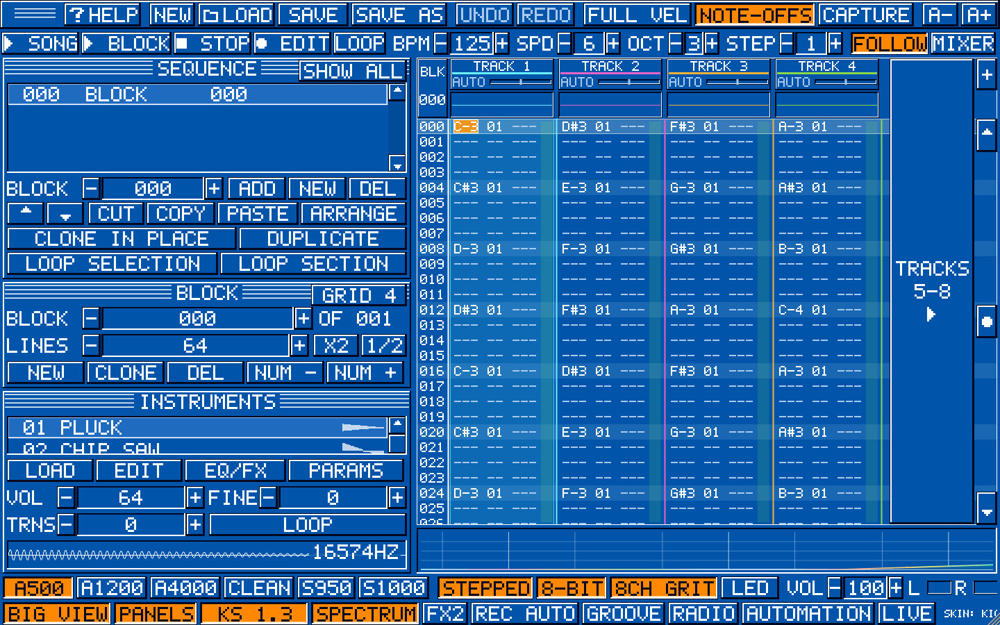
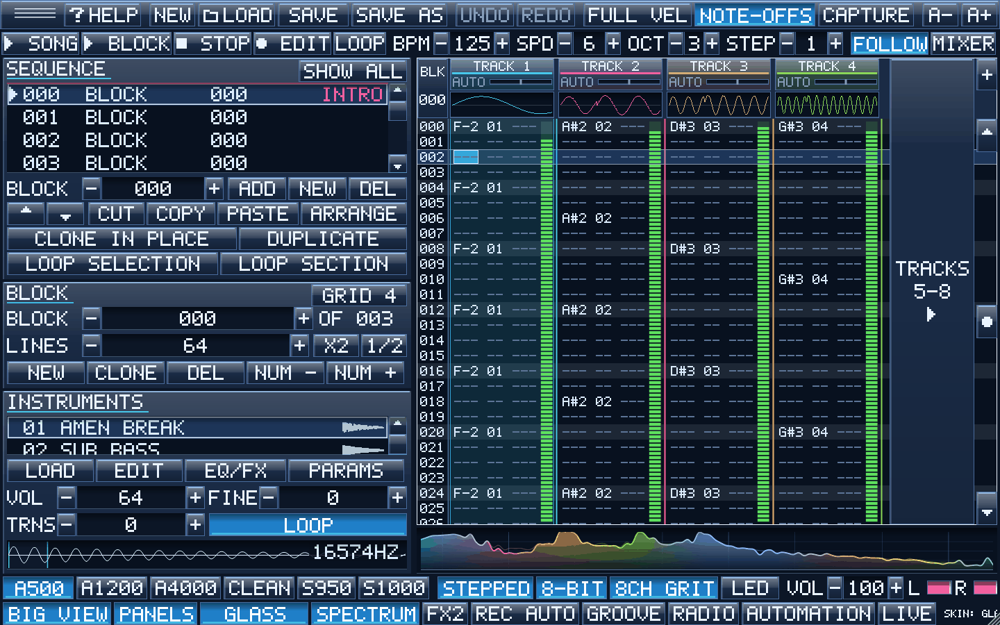

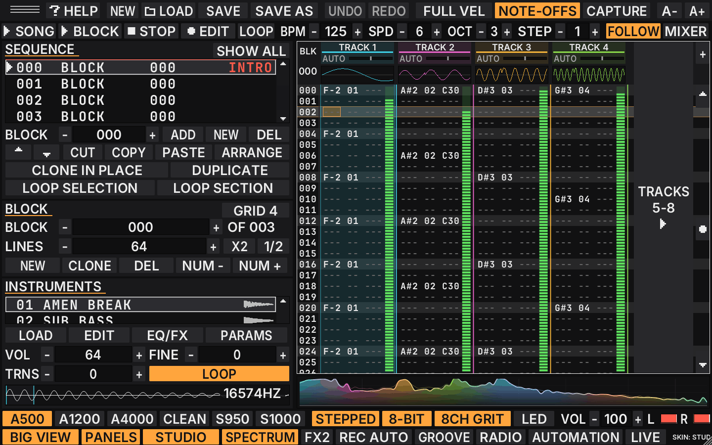


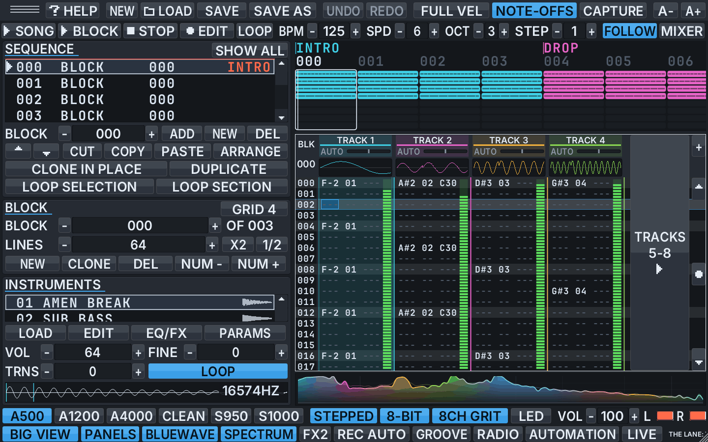
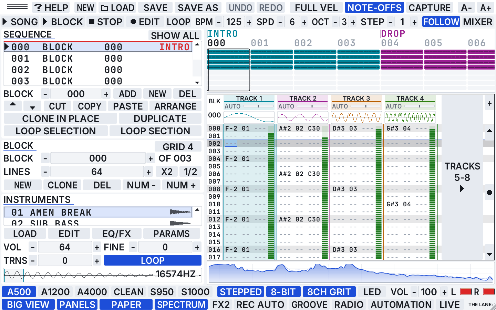
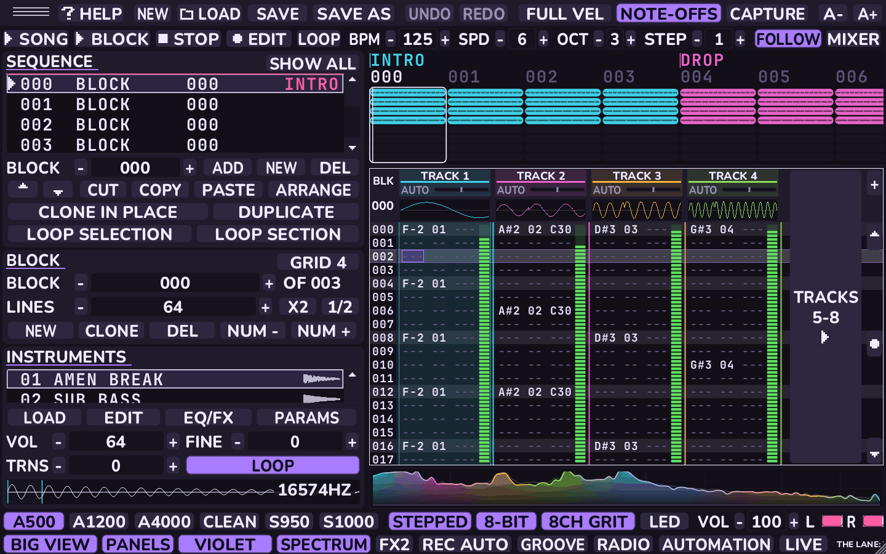


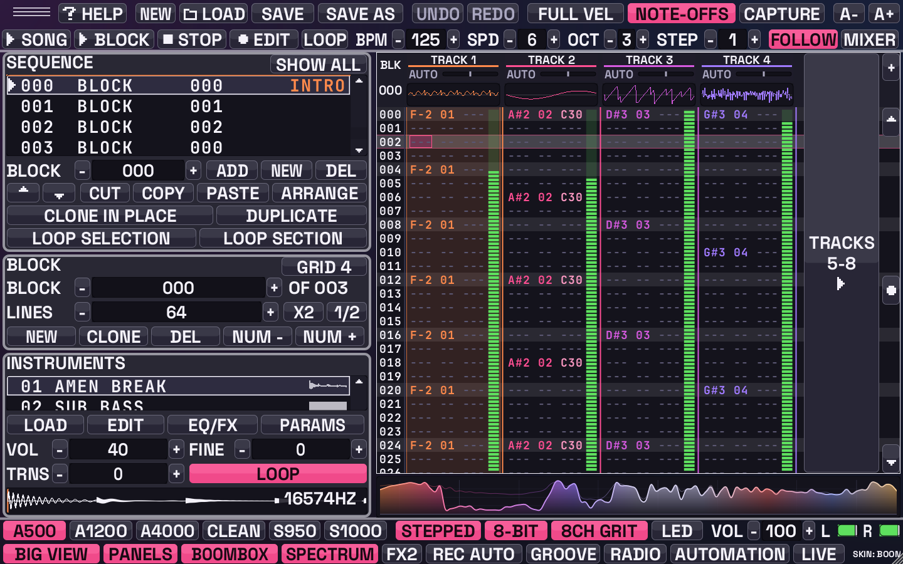


Live feedback
Under each track's name and pan bar is its scope: the track's sound as a moving line in the track's colour, held still on each cycle the way ProTracker's scopes were. A silent track is a flat line; a muted one shows only the zero line. Click a scope to mute its track, right-click (or Alt-click) to solo it — the same as its name. View → Track Scopes hides them for more rows; the choice is kept.
Each new note lights the track's header up in its colour, fading out in a moment, so you can see which tracks are playing at a glance. The meters, scopes and play line move 60 times a second.
While you drag a slider, a mixer fader or one of the strips' small bars, its value shows big in a box beside it (VOL -6.0, WIDTH 150%), and goes when you let go. Buttons light up under the mouse and sink when you press them.
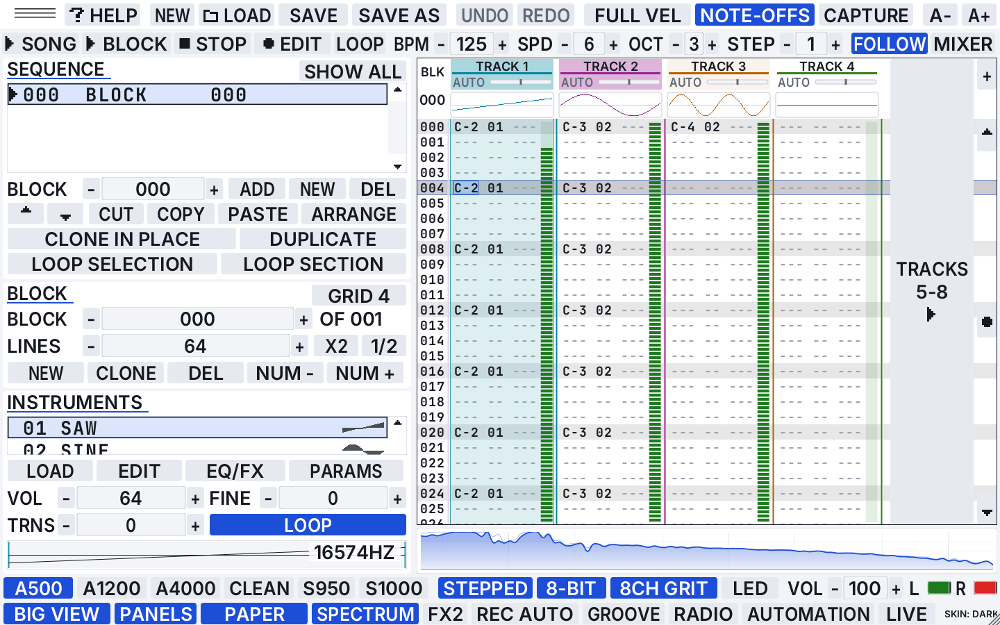
The command palette
CmdK (or View → Command Palette) opens a box for typing a command. Type a few letters of anything the app can do — a button on screen, a page (PAGE: MIXER), a skin, a menu command — and the list narrows as you type. Letters in order are enough: SVAS finds SAVE AS. Up / Down pick, Enter does it, Esc closes it. A menu command shows its shortcut beside it in orange, so the palette teaches the keys as you go.
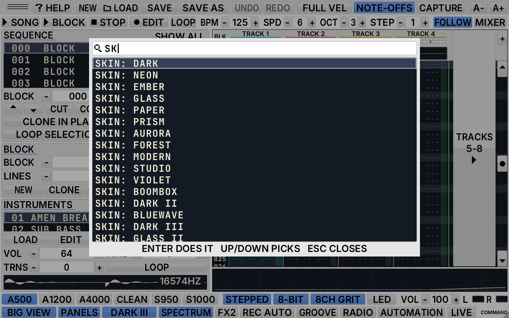
Showing the whole sequence
SHOW ALL, at the right of the SEQUENCE title, gives the sequence the whole side: BLOCK and INSTRUMENTS fold down to their titles. When the song is longer than the side can show, the sequence spreads over the main area as well, in columns, so the whole song is in view at once — about 48 positions at 1440 × 900 (A- fits more; a longer song still scrolls). The buttons stay at the left, the size they always are. Clicking, dragging to move, highlighting and the section labels work in every column. Click SHOW ALL again to get the pattern and the other panels back as they were.

Folding the sidebar
Click the title of a sidebar panel — SEQUENCE, BLOCK or INSTRUMENTS — to fold it down to just its title; its room goes to the others. Fold SEQUENCE and BLOCK and the instrument list fills the side. Click a folded title (marked with ▼) to open it again. Right-click a folded title for TABS, one panel open at a time (click a title to switch), or OPEN ALL PANELS. The sidebar is kept as you left it.
Pictures
The instrument list shows each sample's waveform at the right of its row, when the name leaves room. On the mixer, a track whose EQ is on has its EQ curve drawn behind its EQ button. HELP, LOAD and other buttons in the top row get a small icon beside the label when the window has room for both — never instead of the label, and never making it smaller. The arrange page has a minimap of the whole song (see Blocks & the song).
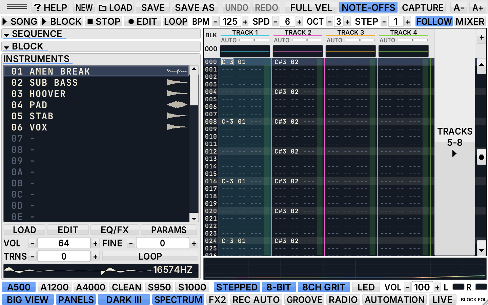
The lane
The whole song as a strip over the pattern: one column per song position, and in it a clip for each track, in its section's colour (a track's own colour before the first section), with the notes drawn small inside — across is when, up is how high. Section names run along the top, over the position numbers. The position you're editing is ringed; while the song plays, a playhead runs through the playing position and the lane scrolls along with it. Click a column to go to that position; the mouse wheel scrolls the lane. Turn it on from the sidebar menu (right-click a folded title), View > The Lane, or Cmd+K and LANE. It's kept for next time.
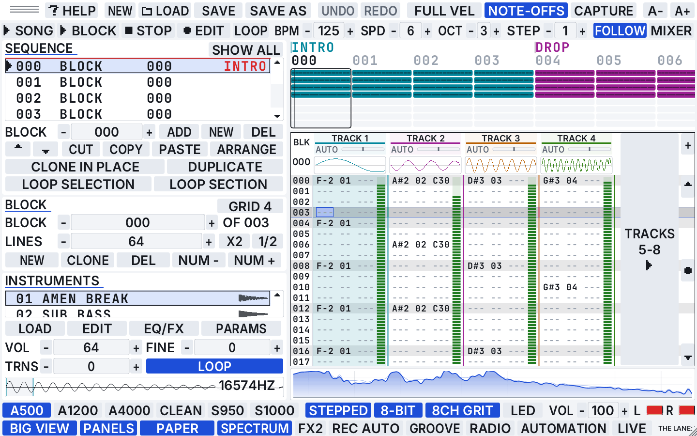
Pads
Sixteen pads, one instrument each, like a drum machine's. Press a pad to choose its instrument and play it at C of the octave (OCT); with EDIT on it's written at the cursor, just as a key would be, and the cursor steps on. Pad 1 is at the bottom left. A pad lights whenever its instrument plays, on any track. - and + change the bank: A is instruments 1–16, B 17–32, C 33–48, D 49–63.
With the sidebar showing, the pads are two rows of eight under the pattern, in the spectrum's place. With the sidebar off (PANELS) they're four by four beside the pattern. Either way the pattern keeps its size — its text never shrinks to make room. Turn them on from the sidebar menu, View > Pads, or Cmd+K and PADS.
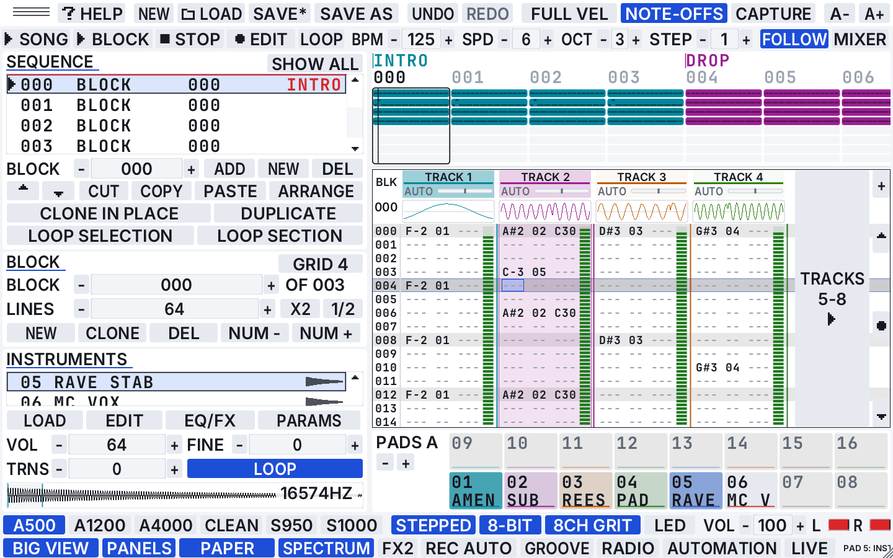

Writing patterns
Each track has a note, an instrument number and an effect command per line: C-2 01 956 means note C-2, instrument 01, command 9 with value 56. A second effect column appears when you switch FX2 on.
Notes and the cursor
- With ● EDIT on, the bottom rows of keys play and enter notes from the octave in OCT; the Q row is the octave above. 1 enters a note-off (
OFF). - In the instrument and command columns, type hex digits 0–9 A–F, or a letter G–Z for the extra commands.
- Shift3 in a command column types
#, the chord command (see Chords). - Delete clears the field under the cursor. ShiftDelete removes the line and pulls the track up; AltDelete inserts a blank line.
- A MIDI keyboard plays the current instrument and enters notes when EDIT is on. MIDI 60 =
C-3. - HOLD KEYS (F4, or HOLD KEYS in the CmdK palette): a note you play stays on after its key comes up; play the same note again to stop it, and F4 again stops them all. Useful on a laptop: while a key is held down, macOS ignores the trackpad (so your palm can't move the pointer while you type), which means you can't move the mouse while holding a note — with HOLD KEYS you don't need to. An external mouse isn't affected.
Recording and note-offs
With EDIT on (Esc or \), playing while the song or block plays records the notes where you play them. On a plug-in or MIDI-out instrument, letting go of a key writes an OFF on the line you let go, so the notes are as long as you held them. When stopped (step entry), note-offs go in only if you ask: right-click EDIT and turn on STEP ENTRY NOTE-OFFS.
- Legato: let go of a key as (or just after) the next one goes down and no
OFFis written — the next note ends the old one by itself. The OFF never lands on the next note, and the next note isn't pushed onto another track. CAPTURE does the same. - NOTE-OFFS in the title bar (also right-click EDIT, and Record Note-Offs in the View menu) switches note-off recording off altogether: live, step entry and CAPTURE then write notes only.
- FULL VEL in the title bar (also right-click EDIT, and Full Velocity in the View menu) ignores how hard you hit a MIDI keyboard: every note plays and records at full velocity (127).
- FOLLOW INSTRUMENT (on to start with; right-click EDIT, or the View menu): clicking a note in the pattern — its note, instrument or effect columns — picks its instrument in the INSTRUMENTS list. A cell without an instrument number uses the last one above it on that track; an empty cell changes nothing.
These switches are remembered.
FOLLOW and the arrows
With FOLLOW on, the cursor moves with playback but the view doesn't scroll by itself: the play line runs down the screen and can go off the bottom. Scroll with the wheel or the arrows at the right of the pattern: ▲ / ▼ move a page (hold to keep going), ● jumps to the play line. A new block starts at its top. When stopped, the arrows move the cursor a page.
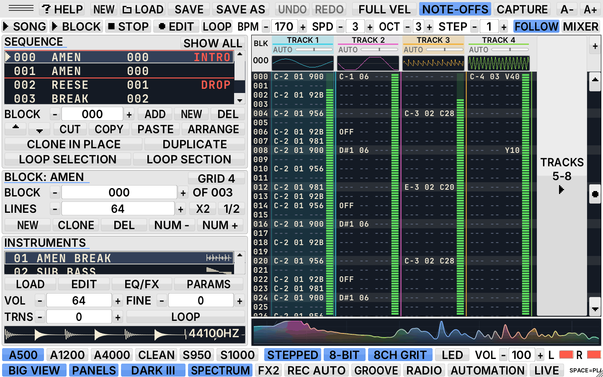
CAPTURE: keep what you just played
The app is always listening to the MIDI keyboard and the laptop keys, even with EDIT off — the last two minutes. Noodle away; if you like what you played, press CAPTURE in the title bar or CmdR (or Capture What I Played in the View menu, or right-click EDIT) and it is written into the pattern, one undo step.
- Played while the song or block was playing: the notes go where they were played, snapped to the grid.
- QUANTISE (right-click EDIT → QUANTISE...; remembered) works for live recording and CAPTURE. EVERY LINE (to start with) puts each note on the nearest line, with no
Mxx: a note hit a hair early lands on the beat, not the line before. EVERY 2, 4 or 8 LINES snaps to a coarser grid. A live note snapped ahead of playback isn't played again when playback gets there. OFF: live notes go on the line playing; CAPTURE keeps your timing withMxx. - One take is one time round. Each time playback goes back to the start (the end of the song, a looping block, the loop lines) a new take begins, so loops never pile up. CAPTURE takes the latest time round that had notes in it: play on the 2nd time round, let it go round 5 more times, and it still writes the 2nd. A note held over the wrap gets its
OFFwhere you let go, early in the block, so it rings over the loop as played. - Played while stopped: the notes since the last pause of more than 4 seconds go in from the cursor, at the song's tempo.
- Notes start on the cursor's track; held notes spread over the tracks to the right. Chords that match the chord table go in as one note +
#xy(see Playing chords in). Plug-in and MIDI-out instruments get note-offs (not between legato notes, and none with NOTE-OFFS off).
Highlighting with the mouse
Drag across the pattern to highlight notes and effects; it snaps to whole fields and can cover several tracks. Shift-click highlights from the cursor to the click, and CmdA highlights the whole block.
- CmdC / CmdX copy or cut the highlight; CmdV pastes at the cursor, each part into the same kind of field. Without a highlight they work on the whole track (add Shift for the block).
- Cmd↑ / Cmd↓ transpose the track a semitone, with Shift an octave.
- Right-click inside a highlight to bounce it to a new sample.
Moving notes with the mouse
Hold Alt and drag a note — or a highlight, dragged from inside it — to another line or track. It lands where you let go, in whole lines and whole tracks, and stays inside the block; the highlight shows where it will go while you drag. AltShift and drag copies instead. A single note moves with its effects, and one undo puts it all back.
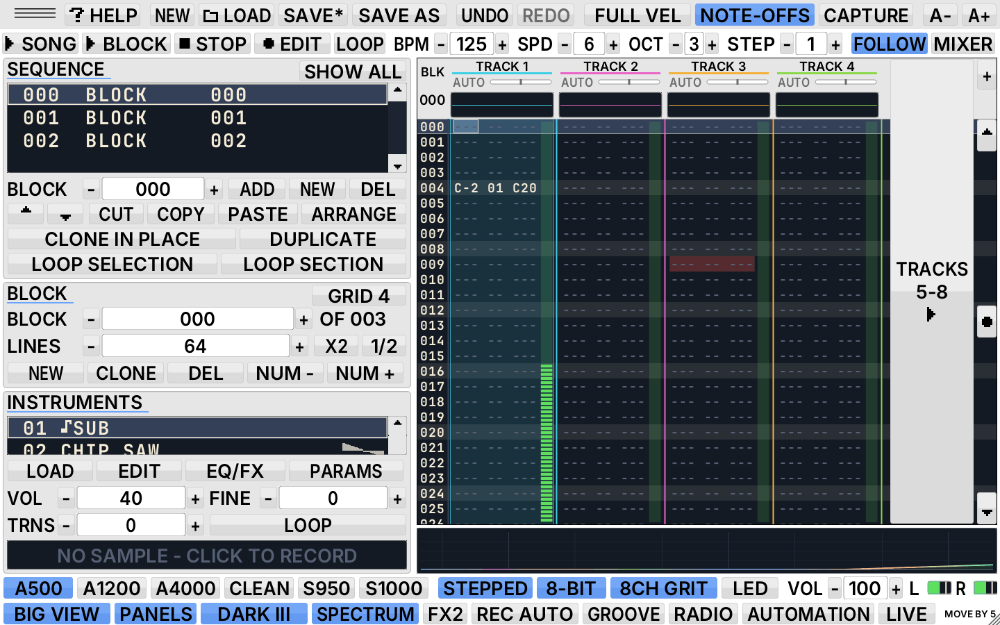
Looping some lines
Drag down the line numbers to mark lines; they turn red and playback goes round them. Cmd[ and Cmd] set the start and end at the cursor. LOOP on the transport row turns the loop off and on again.
Playing a block
While a block plays, picking another block (in the sequence, the BLOCK box or the BLK corner) plays it next, in time: the block playing carries on to its end, then the new one starts from its top and loops — no stop, no restart. The pattern shows the block that's waiting and the status line says BLOCK 005 PLAYS NEXT; pick the playing block again to call it off.
▶ BLOCK while anything plays does the same: the block playing just loops on from where it is (from the song too — nothing restarts), and another block waits for this one to end.
Undo
One history covers everything: notes, blocks, the sequence, instruments, samples, the mixer and song settings. CmdZ and CmdShiftZ work on every page, and the status line says what was undone. It keeps the last 200 steps.
Effect commands
Right-click an effect cell for a list of every command with what it does. Click one, or type its letter, and it goes into the cell with a useful starting value, the cursor ready on the value. Put the cursor on any command to see it explained in the help strip under the pattern.
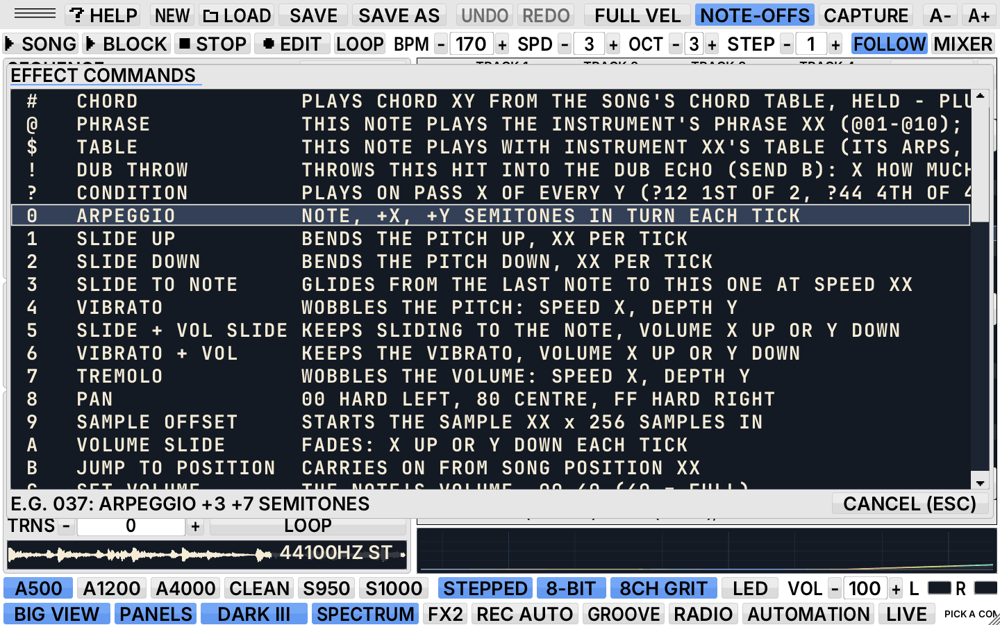
The chord command (#)
#xy plays chord slot xy from the song's chord table, held, on a plug-in or MIDI-out instrument. It is at the top of the command list; clicking it opens the chord list. See Chords.
Classic commands (0–F)
The same numbering as ProTracker, so MOD files load straight in.
| CMD | EFFECT |
|---|---|
0xy | Arpeggio (+x, +y semitones), as in ProTracker |
1xx 2xx | Slide pitch up / down |
3xx | Slide to the note |
4xy | Vibrato (speed x, depth y) |
5xy 6xy | Slide to note / vibrato, plus volume slide |
7xy | Tremolo |
8xx | Pan: 00 left, 80 centre, FF right |
9xx | Sample offset (xx × 256) |
Axy | Volume slide (x up, y down) |
Bxx | Jump to song position xx |
Cxx | Volume (00–40); velocity on plug-in and MIDI-out instruments |
Dxx | Next block, starting at line xx |
E0x | LED filter: E00 on, E01 off |
E1x E2x | Fine slide up / down |
E4x E7x | Vibrato / tremolo waveform |
E5x | Finetune |
E6x | Loop: E60 marks the start, E6x repeats x times |
E8x | Coarse pan |
E9x | Retrigger every x ticks |
EAx EBx | Fine volume up / down |
ECx | Cut the note at tick x |
EDx | Delay the note by x ticks |
EEx | Delay the line by x lines |
Fxx | 01–1F speed, 20–FF BPM, 00 stop |
Extra commands (G–Z)
Type the letter in an effect column, then two hex digits.
| CMD | EFFECT |
|---|---|
Gxx | Glide to the note over xx ticks |
Hxx Lxx Wxx | High-pass / low-pass / band-pass filter, cutoff xx (00 20 Hz – FF 20 kHz). On a plug-in or MIDI-out instrument, its learned knobs instead. |
Qxx | Filter resonance (or a learned knob) |
Ixx | Transpose just this note: 80 none, 8C +12, 74 −12 |
Kxx | Chance: the step plays xx/FF of the time |
?xy | Condition: plays only on pass x of every y (?01 FILL only, ?02 not in a FILL, ?03 first time only, ?04 not the first) — see below |
@xx | Phrase: the note plays the instrument's phrase xx (@01–@10); @00 plays the sample — see Phrases |
!xy | Dub throw: this track into the dub echo on SEND B, x how much, y lines (0 = to the next note); !0y rides the echo's feedback — see Mixer |
Mxx | Micro-move: 01–7F late by xx/128 of a line, 81–FF early |
Nxx | Note length: release after xx ticks |
Oxx | Overdrive (on plug-in / MIDI-out instruments: the mod wheel) |
Pxx | Start at xx/256 of the sample |
Rxy | Roll: retrigger every x ticks, y 1–7 quieter or 9–F louder each time |
$xx | Play with instrument xx's TABLE ($00: none) |
Sxx | Play slice xx+1 (no slices: one of the SXX PARTS); with PLAY THRU, on to the end |
Txx | Micro-tune: 80 = 0, each step 1 cent |
U01 U00 | Play backwards / forwards |
Xxy | Randomise: x 0 note ±y, 1 volume, 2 pan, 3 start |
Zxx | Bit crush to xx bits |
Vxx Jxx | The track's automation knobs AUTO A and AUTO B (see Automation) |
Yxx | The next knob change on this track glides over xx ticks |
Conditions and FILL
A short block can play differently each time round, like the conditional steps on Elektron boxes.
?xyin an effect column: the step plays only on pass x of every y —?12the first time of every two,?22the second,?14to?44one time in four,?48the fourth of every eight. Passes count from when play starts: each time the block starts again (looping, the song coming back to it, another position playing it) is the next pass.?01plays only in a FILL,?02only when not in one,?03only the first time the block plays,?04every time but the first.- FILL: hold F2 while it plays — the pattern's corner turns red — or ShiftF2 to latch it on and off. The BREAK page has a FILL button too. Put a snare roll on
?01and the kick it replaces on?02, and F2 drops the fill in. - Highlight notes and right-click → CONDITION (WHICH PASSES PLAY)... for the usual ones. It goes in a free effect column, or replaces a condition already there; NONE takes it off. Type ? in an effect column to write one by hand.
Kxxworks with it: a step with both plays on its pass, xx/FF of the time.
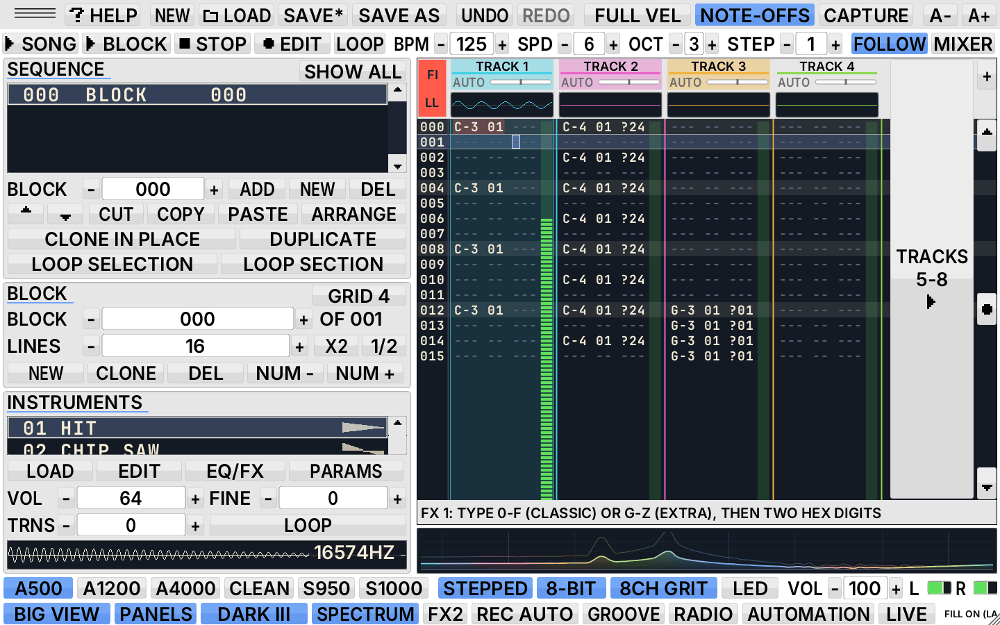
FX tricks
Tricks with the effect commands, from 30 years of trackers: the ProTracker and OctaMED days, the PC trackers that followed, and Polyend-style step effects. Each one works in Paula's Revenge as written. Copy the lines into a pattern, play them, then change the numbers.
READ THE SNIPPETSEach line is LINE NOTE INS FX1 FX2, as in the pattern. --- is an empty effect. Line numbers are decimal, as in the pattern; the numbers in commands are hex, so C20 is half volume. A snippet that needs two effects needs FX2 on (bottom row).
Breaks
Chop a break with 9xx
Put the whole break on one note and jump around inside it with 9xx. Each step of xx is 256 samples into the sample. Find a hit by trying offsets: 900 is the downbeat, and a snare is often near 920 to 940 on a one-bar break at 44.1 kHz. A bare 900 repeats the last offset used on that track.
000 C-3 01 900 --- 004 C-3 01 940 --- 006 C-3 01 918 --- 008 C-3 01 900 --- 012 C-3 01 940 C30
The limit: 9FF reaches only 65,280 samples past START, about 1.5 s at 44.1 kHz. For anything later in a long break use Pxx (start at xx/256 of the whole sample, so P80 is halfway) or slices with Sxx.
Slices instead of offsets
Slice the break in the sample editor (or let it cut by its hits), then Sxx plays slice xx+1 and stops at the slice's end, so no hit bleeds into the next. With no slice points, Sxx treats the sample as 16 equal parts, so S00–S0F are the 16ths of a one-bar break, ready to rearrange. The sample editor shows those 16 parts with their S00–S0F tags, so you can see which hit each one is.
000 C-3 01 S00 --- 002 C-3 01 S02 --- 004 C-3 01 S04 --- 006 C-3 01 S04 I8C 008 C-3 01 S08 U01
Line 006 replays the snare an octave up (I8C, +12 semitones on this note only). Line 008 plays a slice backwards (U01).
The rolling break
An old jungle trick from the PC tracker scene: retrigger the whole break off the grid so it rolls around the beat. Trigger it on lines 0, 6, 16, 26, 32, 42, 48 and 54 of a 64-line block, adjusting the tempo or the offsets until it locks back in. For a harsher roll, put a second copy on another track panned opposite (8xx) and trigger it on 0, 10, 16, 22, 32, 38, 48 and 58.
Phased break
The same break on two tracks at once, the second detuned by a few cents with Txx (T86 is +6 cents), panned apart. The two copies drift against each other and the break swirls across the stereo field: the Amiga "phasing" sound, no effect needed.
track 1: 000 C-3 01 820 --- track 2: 000 C-3 01 8E0 T86
Snare rolls and ratchets
Rxy retriggers the note every x ticks; y 1–7 makes each hit quieter, 9–F louder. R39 builds a roll up into the drop; R23 fades a stutter away. The classic way is E9x (retrigger every x ticks, same level). Raise the speed for finer rolls, or highlight a run of snares and use RATCHET from the right-click menu for rolls that speed up across it.
056 D-3 02 R31 C20 060 D-3 02 R21 C30 062 D-3 02 R1A C40
Stutter and tape-stop edits
ECx cuts the note at tick x, so EC2 on every line of a break turns it into a choppy stutter. Nxx (note length in ticks) does the same on synths. For a tape stop, slide the pitch down hard over the last beat with 2xx (2FF each line), or glide it down with Gxx to a low note.
Random break variations
X3y starts the note at a random point up to y/16 in. Put X34 on a few hits and the break never plays the same twice. Kxx gives a hit a chance to play (K80 half the time) for ghost notes that come and go.
Groove and timing
Swing with the speed
Each line lasts speed ticks. Alternate the speed every line and the off-beats arrive late: the classic tracker shuffle. Keep the pair adding up to twice your speed so the tempo stays the same: F07 / F05 for a light swing at speed 6, F08 / F04 for a hard one.
000 C-3 01 F07 --- 001 --- -- F05 --- 002 D-3 02 F07 --- 003 --- -- F05 ---
Or leave the speed alone and use GROOVE on the bottom row, which does it for you.
Flams, drags and late hats
EDx delays a note by x ticks; Mxx moves it by finer steps, later (01–7F) or earlier (81–FF). A snare on two tracks, one with M10, is a flam. Late hats (M08 on the off-beats) push the groove forward. EDx on alternate notes of one track swings just that track.
Hold a line, then drop
EEx holds the current line for x more lines while everything keeps ringing: a built-in pause before the drop. E6x loops a few lines x times (E60 marks the start): repeat the last beat four times without copying it.
Bass and pitch
Reese and sub slides
Gxx glides into the note over xx ticks. On a REESE or SUB that's the slide between bass notes, without touching the next note's attack. 3xx is the classic tone-portamento: 3F0 is fast, 308 slow, and a bare 300 carries on at the last speed.
000 C-2 03 --- --- 008 D#2 03 G08 --- 010 C-2 03 G04 ---
Wobble and growl
Per-step filter moves: Lxx (low-pass) and Qxx (resonance) on each line sweep a bass open and shut in time. For a smooth sweep, use Yxx before a knob change (Vxx / Jxx) to glide over xx ticks. 4xy (vibrato) with a fast speed and big depth gives a gritty warble on a sub; E42 makes it a square-wave trill.
Arpeggios: one note, a whole chord
0xy cycles the note, +x and +y semitones, every tick: the chip-music chord. 037 is minor, 047 major, 0C0 an octave flutter. On a break, 0C0 gives the old hardcore chipmunk-stab sound. Lower the speed for slower, clearer arps.
Detune for width
Txx retunes one note by cents (80 = none). Two copies of a lead or pad on two tracks, T7A and T86, panned left and right, are an instant chorus. E5x does the same with the instrument's finetune.
Space and stereo
Tracked echo
Before plug-in delays, trackers made echo by hand: copy the line to a spare track a few lines later at lower volume, panned the other way. Three copies at C20, C10 and C08, alternating left and right, make a ping-pong delay that follows tempo changes exactly.
track 1: 000 A-4 05 --- 820 track 2: 003 A-4 05 C20 8E0 track 2: 006 A-4 05 C10 820 track 2: 009 A-4 05 C08 8E0
Dub throws
!xy throws the track into the dub echo on SEND B: x sets how much, y for how many lines. !F1 on the last snare of a phrase sends just that hit off into the echo. !0F rides the echo's feedback right up for a runaway tail; !00 brings it back.
Auto-pan and gates
8xx pans each hit: alternate 840 / 8C0 on hats for movement. 7xy is tremolo; after E72 (square wave) it becomes a rhythmic gate chopping a pad into pulses. Axy slides the volume up or down across a line for swells and fades.
Mangle it
One-hit lo-fi
Zxx crushes a single note to xx bits (Z04 is filthy), and Oxx overdrives it. Put them on the last snare of a bar or one stab in a phrase. Combine with Hxx (high-pass) for a thin telephone hit.
Reverse swells
U01 plays the note backwards from its end. A reversed cymbal or snare a beat before the downbeat, with Axy fading it up, is the classic suck-in.
Randomise everything a little
Xxy randomises one thing per hit: X0y the note ±y semitones, X1y the volume, X2y the pan, X3y the start. X12 on every hat is instant humanising.
Arrangement
Variations without copying blocks
?xy plays a step only on pass x of every y times the block plays. A crash on ?14 hits every four bars. Snare fills on ?44 come in every fourth time round. Put a jump (Bxx, in FX2) on a ?44 line and every fourth time round it jumps to a fill position. ?01 plays only while you hold F2 (FILL), ?02 only when you don't: live fills on one key.
Endings and breakdowns
Dxx leaves the block early, starting the next one at line xx (for a half-bar block without changing its length). F00 stops the song. A tempo change (F20–FF set the BPM in hex: FAC is 172) on the first line of the breakdown block halves the energy in one step.
More break tricks
The pitched-up snare roll
A roll that rises as it speeds up: the classic hardcore build into a drop. Each line plays the snare a little higher with Ixx while Rxy gets faster.
048 D-3 02 R41 I80 052 D-3 02 R31 I83 056 D-3 02 R21 I86 060 D-3 02 R1A I89 062 D-3 02 R1A I8C
Restart the break from any hit
Turn on PLAY THRU in the slicer. Each Sxx now starts at its slice and lets the break run on, so a single S04 mid-bar restarts the whole break from the snare. Two or three restarts a bar is the classic “skippy” jungle edit with hardly any typing.
000 C-3 02 S00 --- 006 C-3 02 S04 --- 010 C-3 02 S02 ---
Half-time and double-time without new chops
On a break chopped with Sxx, play the parts on every second line instead of every line: S00 on 0, S01 on 2, S02 on 4… and the break plays at half speed, each hit at its own pitch. On the BREAK page, RE-EDIT's HALF-TIME and DOUBLE-TIME do it to a chopped break in one click.
Ghost notes that come and go
Fill the gaps with extra snares, very quiet (C08–C14), and give each a chance with Kxx. They fade in and out of the groove, so the break breathes.
003 C-3 02 S04 C0C K60 007 C-3 02 S04 C10 K40 011 C-3 02 S04 C08 K80 015 C-3 02 S04 C14 K30
A four-bar break in 64 parts
Set the sample's SXX PARTS to 64. S00–S3F are now the 16ths of all four bars, so you can borrow the snare from bar 3 (S24) or the fill from bar 4 (S38–S3F) and drop it anywhere.
Builds and drops
The high-pass build
Raise Hxx on the drum track every bar of the build, so the low end drains out. On the drop's first line H00 brings it all back at once.
000 C-3 01 H20 --- bar 1 016 C-3 01 H50 --- bar 2 032 C-3 01 H90 --- bar 3 048 C-3 01 HC0 R21 bar 4: thin and rolling
The rising pitch
A long note (a noise sweep, a pad, a hoover) with 1xx on every line slides up and up into the drop. Bigger numbers rise faster. 2xx is the same downwards: a tape-stop-style dive after the last hit of a breakdown.
The gap before the drop
ECx cuts every track a few ticks into the last line of the build. EE2 on that line holds it for two more lines. A beat of near-silence, then the drop.
A beat repeat
E60 marks a line as a loop start, and E6x a few lines later plays those lines x more times. Put E60 on line 56 and E63 on line 59 for the last beat of a bar three more times over.
Bass
The 808 slide
Load SUB with the 808 DROP preset, set MODE to LEGATO and DROP ON to EVERY NOTE. Notes that overlap slide into each other and still get the 808's pitch drop. Gxx sets how long each slide takes.
000 F-1 03 --- --- 008 F-2 03 G03 --- up an octave, fast 010 F-1 03 G06 --- and back down 016 D#1 03 G10 --- a slow slide
A stepped wobble, written in
No LFO needed: change the low-pass every line and the wobble lands exactly where you write it. Uneven steps sound more alive than a smooth sine.
000 F-1 04 L30 Q60 001 --- -- L90 --- 002 --- -- LE0 --- 003 --- -- L60 --- 004 --- -- L30 --- 006 --- -- LC0 ---
A pump without the duck
On a pad or bass: C10 on each kick's line drops it right down, then A40 on the next lines slides it back up over two or three lines. The same pump as a sidechain, but drawn by hand, so each beat can pump differently.
000 --- -- C10 --- kick: duck 001 --- -- A40 --- and back up... 002 --- -- A40 --- 003 --- -- A40 --- ...full again 004 --- -- C10 ---
Width and space
Haas width
The same hit on two tracks, panned hard left (800) and hard right (8FF), with M04 on the right one. It lands about 3 ms later at 170 BPM: too soon to hear as an echo, so the hit just sounds wide. Great on claps and stabs. Keep it off the kick and sub.
Ping-pong hats
Alternate 840 and 8C0 on hats for movement, or put X24 on every hat for a random pan each hit.
The runaway dub echo
!F0 throws a hit into the dub echo until the track's next note. !0F on a later line rides the echo's feedback right up, so it builds on itself; !00 brings it back before it gets out of hand. Do it on the last stab of a breakdown.
Glitch and texture
Buzz rolls
E91 retriggers every tick: a hat or snare turns into a buzzing tone. The buzz follows the tempo: the faster the song, the higher it sounds. Follow it with ECx to snap it off.
Choppy pads
N02 on every line of a held synth chord (written again each line) releases it after 2 ticks: a gated, trancey stutter. Change the number line by line for a rhythm.
Switch an effect in for one bar
Right-click an on/off control on a built-in synth (SUB's BEAT buttons, say) and make it the track's AUTO A. Now V01 switches it on and V00 off, from the pattern: crush the last bar, or kick in a wobble for the fill only.
One-hit lo-fi, every hit different
Z06 on a snare, Z0A on the next, Z04 on the last: each hit crushed a different amount. With S950 on the output strip, the whole mix gets the Akai's grit on top.
Arrangement tricks
First time only, and never again
?03 plays a step only the first time its block plays: an intro crash, a vocal tag. ?04 is everything but the first time: the hats that come in on the second time round.
Call and response
?12 on one stab and ?22 on another: the first plays on odd passes, the second on even ones. Two-bar call and response from a one-bar block.
A half-length bar
D00 on line 32 of a 64-line block leaves it halfway, so the next block starts on the beat: a two-bar turnaround without a new block length.
The live remix
In LIVE mode, launch blocks on the pads, hold REPEAT 1/16 (7) for a stutter, FILTER DOWN (G) for a breakdown and TAPE STOP (T) to end. With REC ARRANGE on, the blocks you launch become the sequence.
Combos: a whole fill
Many tricks together on the last bar before a drop: a pitched roll, a reversed cymbal, a dub throw and the gap.
track 1: 048 C-3 02 S04 R41 track 1: 052 C-3 02 S04 R31 I83 track 1: 056 C-3 02 S04 R21 I86 track 1: 060 C-3 02 S04 R1A I89 track 1: 063 --- -- EC2 EE1 cut, hold track 2: 052 A-3 08 U01 C08 reverse cymbal track 2: 053 --- -- A40 --- swelling up track 2: 054 --- -- A40 --- track 2: 055 --- -- A40 --- track 3: 062 A-3 05 !F0 --- stab to echo
SOURCESTricks gathered from the ProTracker command reference, the OpenMPT Tracker Handbook (techniques: the rolling and phased breaks, swing by speed and by note delay), MusicRadar's tracker tips, the trackerninja Renoise tips, and the Renoise forum's "90s composer tricks" thread (hand-made echoes and detuned layers), all written up for Paula's Revenge's commands.
Tutorials
Eight walk-throughs, from an empty song to a finished track. Each one builds on the last, but each also works on its own. They use the jungle and drum & bass habits the app was built for: 170 BPM, a break on track 1, the bass under it, the stabs and pads over it.
BEFORE YOU STARTSet BPM to 170 and SPD to 6 on the transport row. At speed 6, four lines are a beat and 16 lines are a bar, so a 64-line block is four bars. The snippets are LINE NOTE INS FX1 FX2, as in the pattern; line numbers are decimal and command values are hex. You need a break of your own (a one-bar Amen, Think or Funky Drummer loop) — the app comes with none.
1. A jungle loop in five minutes
You'll learn: loading a break, the BREAK page, fitting it to the tempo, and letting the app write the first edit for you.
- Click instrument 01, press LOAD → SAMPLE and pick your break. Every sample you highlight plays, so you can audition as you go. Double-click (or Enter) to load it.
- Press Cmd6 for the BREAK page. Set BARS to how long the loop is (usually 1), then press AUTO. The hits are found and tagged K (kick), S (snare), H (hat), O (other). Wrong guess? Right-click a slice and say what it is.
- Leave FIT TO TEMPO on and press MAKE BLOCK. A new block appears with the break chopped onto track 1, each slice on the line where it falls, and BEAT SYNC set so it plays in time at 170.
- Press PLAY (or Space). That's your break, as played, at jungle tempo.
- Now make it jungle: under REBUILD press CLASSIC '94. The kick gets pushed, a ghost snare goes in before the second half, and a snare lands on the last 16th.
- On the LAB row, click STYLE until it says '94 ROLLERS, set WILD to about 40 and press EDIT ME. Press it again for a different edit. Each press is one undo step, so CmdZ brings back one you liked.
- Click a bar in the grid at the bottom and press RE-ROLL BAR to rewrite just that bar. MUTATE changes a few hits and keeps the rest, so press it a few times to let the edit evolve.
Try next: 4 VARIATIONS makes four new blocks after this one, each a different rebuild, the last ending in a ghost roll. That's the drum track for a whole 16-bar section in one click.
2. Chopping a break by hand with Sxx
You'll learn: the 16 Sxx parts, writing your own chops, ghost notes, rolls and PLAY THRU.
- Load the same break again into instrument 02 (a fresh copy, without the slices the BREAK page gave 01) and press EDIT. With no slices, the editor shows the 16 parts
Sxxplays as faint lines with S00–S0F tags. On a one-bar break each part is a 16th. On its PARAMS, turn on BEAT SYNC with LINES 16, so the bar of break lasts exactly a bar at 170. - Make a new 16-line block (BLOCK NEW, then LINES 16). On track 1, type
C-3with instrument 02 on every line you want a hit, and put anSxxin FX1 to choose which 16th of the break plays there (two effects on a line need FX2 on, bottom row):
000 C-3 02 S00 --- kick 002 C-3 02 S02 --- 004 C-3 02 S04 --- snare 006 C-3 02 S06 --- 007 C-3 02 S04 C10 ghost snare (quiet) 008 C-3 02 S00 --- kick again, early 010 C-3 02 S0A --- 011 C-3 02 S00 --- double kick 012 C-3 02 S0C --- snare 014 C-3 02 S04 R31 snare roll into the next bar
- Play it with Space. Change a number and listen. That's the whole art of chopping: the rhythm comes from which line, the feel from which part.
- Your hits differ? Watch the editor while it plays, or look at where the tags fall on the wave, and adjust the numbers.
- A longer break: in the sample editor click any Sxx tag and pick 32 PARTS for two bars or 64 PARTS for four.
S00–S3Fare now the 16ths of a four-bar break, with a stronger line on each bar. - Turn on PLAY THRU in the slicer (SLICE). Now each
Sxxstarts at its part but plays on to the end of the break. Use it for the classic “restart the break from the snare” edit, and cut it with the next note orECx.
000 C-3 02 S00 --- the break runs on... 008 C-3 02 S04 --- ...restarts at the snare 012 C-3 02 S0C EC3 cut after 3 ticks 014 C-3 02 S04 U01 the snare backwards
Try next: highlight the block and right-click → RE-SEQUENCE THE SLICES. The rhythm stays but which part plays changes. Again for another; undo goes back.
3. Sub and reese: the bass
You'll learn: SUB, REESE, glides, LAYER, and ducking the bass under the break.
- Click instrument 03, press LOAD → BUILT-IN SYNTH → SUB. In PRESETS... pick CLEAN SUB. Set MODE to LEGATO so overlapping notes slide.
- On track 2 write a bassline. Jungle bass moves slowly: a note or two a bar, held, with the odd slide. Use
Gxxto glide into a note without a new attack:
000 F-1 03 --- --- 012 D#1 03 G08 --- glide down over 8 ticks 016 F-1 03 --- --- 028 OFF -- --- --- a gap before the turnaround 030 G#1 03 G04 --- 032 F-1 03 --- --- 056 C-2 03 G10 --- a slow slide up
- Instrument 04: LOAD → BUILT-IN SYNTH → REESE, preset DARK ROLLER. Rather than copying the bassline, right-click 04 → LAYER: PLAY ANOTHER TRACK'S NOTES... → FOLLOW TRACK 2'S NOTES... → PLAY ON TRACK 3. Set instrument 04's TRNS to 12. The reese now plays the bassline an octave up on its own track.
- Open the MIXER (Cmd2) and press DUCK. In TRIGGERS click 1 (the break); in DUCKED click 2 and 3. Set DEPTH to about 60% and RELEASE to about 150 ms. Every kick and snare now pushes the bass down, so the drums punch through.
- Make the reese dirtier: click an insert slot on track 3, pick PHAT CRUSHER (DRIVE & CRUSH) and its preset REESE GRIT. Lower MIX for parallel crunch.
- Keep the low end mono: on REESE's page press OUTPUT & KNOBS... and set UTILITY → MONO to
<120HZ. The reese stays wide, the sub under it stays solid.
Try next: on REESE's MOVEMENT tab, set WOBBLE SYNC to 1/8 with TARGET CUTOFF for a tempo-locked wobble. Or swap SUB for the 808 DROP preset for a pitched 808 sub.
4. Hardcore stabs and rave chords
You'll learn: RAVE, one-key chords, off-beat stabs, pitch tricks, and dub throws.
- Instrument 05: LOAD → BUILT-IN SYNTH → RAVE, preset STAB. Its CHORD is MINOR, so one key plays the whole minor chord. Try HOOVER STACK and BELGIAN too.
- On track 4 put stabs on the off-beats and let the last one ring into a dub echo:
002 A-3 05 --- --- 006 A-3 05 --- --- 010 C-4 05 --- --- 014 A-3 05 N06 --- cut short: a stab, not a pad 024 F-3 05 --- --- 030 G-3 05 !C2 --- into the dub echo
- The first
!you type turns SEND B into a dub echo (DUB DELAY into a SPRING), so the throw just works. - The “chipmunk” stab: on the break track,
0C0flips a hit between its pitch and an octave up every tick.I8Cplays one hit a whole octave up. - Variation without copying: put
?44on a stab so it only plays every fourth time round, andK80on another so it plays half the time.
Tables: right-click the stab's instrument → TABLE... and pick the MINOR ARP preset: every stab now arpeggiates by itself. On the break, a table with FLAM or RATCHET x4 turns one note into a flam or a ratchet, and $xx picks which table a note uses.
Try next: with a plug-in or MIDI-out instrument, use #xy to play a chord slot from the CHORDS page (Cmd3) and RECORD CHORD to play your progression in.
5. A squelchy acid line
You'll learn: ACID, accents, slides, and riding a knob from the pattern.
- Instrument 06: LOAD → BUILT-IN SYNTH → ACID, preset CLASSIC. Turn RESONANCE up to taste.
- On track 5 write 16ths. A note that runs straight into the next with no OFF between slides into it (set SLIDE to TIED NOTES on the DEVIL FISH tab). A
C40on a note's line accents it:
000 C-2 06 C40 --- accent 001 OFF -- --- --- 002 C-2 06 --- --- 003 C-3 06 --- --- tied: slides up an octave 004 OFF -- --- --- 006 D#2 06 C40 --- 007 OFF -- --- --- 008 C-2 06 --- --- 010 G-2 06 C40 --- 011 A#2 06 --- --- tied: slides 012 OFF -- --- --- 014 C-3 06 C40 --- 015 OFF -- --- ---
- Right-click ACID's CUTOFF and make it the track's AUTO A. Now
Vxxon track 5 sets the cutoff from the pattern. PutY60on a line so the next change glides over 96 ticks (16 lines at speed 6), then the new value on the line after. The filter sweeps open in time with the song.
000 C-2 06 C40 V20 cutoff low 032 --- -- --- Y60 the next change glides 033 --- -- --- VE0 open, over 16 lines
Try next: SWEEP on DEVIL FISH turned down makes a run of accents build up, each one brighter than the last. X07 on a few notes moves them up or down by up to 7 semitones at random, so the line never repeats exactly.
6. Atmospheres: pads, space and dub
You'll learn: PAD, the reverb send, long notes, width and detune.
- Instrument 07: LOAD → BUILT-IN SYNTH → PAD, preset JUNGLE ATMOS. Hold HOLD TO PLAY to hear it.
- On track 6 write a chord change every four bars: a long note, held until the next. Pads should breathe: let the release ring and leave space.
000 A-3 07 --- --- 056 OFF -- --- --- let it go before the change 064 F-3 07 --- ---
- In the mixer, drag track 6's A sideways to send it to SEND A (a reverb to start with). Open SEND A's first insert and pick VAST: DENSITY high and FEEDBACK near 90% for a huge wash.
- Put the pad on the duck too (DUCK → DUCKED → 6), with a long RELEASE (400 ms or more), so it swells between the kicks.
- For width without effects, copy the pad's notes to a spare track, put
T7Aon one track andT86on the other, and pan them left and right.
Try next: GRANULAR with preset CHOIR CLOUD under the pad, or load a vocal into GRANULAR and turn on FREEZE to hold a single moment of it as a drone.
7. From loop to arrangement
You'll learn: sections, fills, conditional steps, builds, drops and jamming the arrangement live.
- In the sequence, list your blocks in order. Click at the right of a row (+ SECTION) to name sections: INTRO, BUILD, DROP, BREAKDOWN, DROP 2, OUTRO. LOOP SECTION loops one while you work on it.
- Fills on demand: on the break track, put a snare roll on lines marked
?01and the kick it replaces on?02. Hold F2 while it plays and the fill drops in.
track 1: 048 C-3 02 S00 ?02 kick, not in FILL track 2: 048 C-3 02 S04 ?01 FILL: a snare... track 2: 052 C-3 02 S04 ?01 R31 ...rolling track 2: 056 C-3 02 S04 ?01 R21 track 2: 060 C-3 02 S04 ?01 R1A
- A build: on the last block before the drop, raise the high-pass on the break each bar with
Hxx(H20,H50,H90,HC0), roll the snare faster withRxy, thenEE3on the last line holds that line for three extra lines before the drop hits. On the drop block's first line,H00opens it again. - A crash every four bars without copying blocks:
?14on the crash. - Jam it out: press LIVE (Cmd7). Each pad launches a block, taking over at the next bar (AT: changes when). Press REC ARRANGE, play the blocks in the order that feels right, press it again, and that becomes the song's sequence.
Try next: in LIVE mode, hold REPEAT 1/8 (6) over the last beat before a drop, or TAPE STOP (T) at the end of the breakdown.
8. Mixdown and render
You'll learn: checking the low end, balancing, the Paula sound, and getting WAVs out.
- Play the loudest part and open the mixer's LOW-END CHECK. Fix what it flags: BASS NOT MONO → the bass instrument's UTILITY MONO; SUB SWAMPS THE MIX → turn the sub down or duck it harder; MUDDY → cut 200–500 Hz on the pads and breaks in their channel EQ.
- Set levels with the faders, drums first. Then the bass up until it sits under them, then everything else.
- Choose the machine on the output strip: A500 for the warm, dull 90s sound, A1200 brighter, S950 or S1000 for the Akai crunch, CLEAN for none.
- File → Render WAV... → SONG for one stereo WAV, or STEMS for one WAV per track plus the two sends and the master, all lined up, ready to drop into Ableton.
Try next: highlight a few lines of the finished drop and press ShiftCmdB (RESAMPLE). They're bounced into a new instrument, already sliced and ready to chop again: the jungle way of building tunes from your own tunes.
Blocks & the song
A song is a list of positions, each playing a block. The same block can play at many positions; change it once and every position hears the change.
The sequence panel
- ADD puts a new position after the selected one, playing the same block; change it with BLOCK - +. NEW makes a new empty block in a new position.
- Drag over the names to highlight positions, then CUT COPY PASTE DUPLICATE DEL. To move them, drag by the position numbers on the left (a hand shows there), or use ▲ ▼.
- COMBINE INTO ONE BLOCK (right-click a highlight): the highlighted blocks, one after another, become one new block in their place (up to 256 lines).
- LOOP SELECTION (or right-click) loops the highlighted positions while the song plays. The list follows the position playing.
- CLONE IN PLACE gives a position its own copy of its block, in the next free block, so you can change it without touching the other places it plays.
- Click the label at the right of a row (or
+ SECTION) to start a named section there (INTRO, DROP…). LOOP SECTION loops the section you're in; pick a position in another section and playback goes there when the current block ends. - Double-click a position to open its block's pattern, from whatever page you're on.
- Block names: right-click → BLOCK NAME... (or CmdR with the sequence clicked last) names its block (AMEN, REESE…). The name takes the place of the word BLOCK —
000 AMEN 003 DROP— with a gap before the block number (which never changes) and before the section name. A name too long for its space scrolls along on the playing, highlighted or pointed-at row. The BLOCK panel's title shows it too.
The arrange page
ARRANGE shows the song order full size, with a picture of each block's notes. It shares the highlight and clipboard with the sequence panel. INSERT adds the BLOCK number after the cursor, SET makes the highlighted positions play it.
Under the list is the minimap: the whole song in one strip, a column for each position with its notes in the tracks' colours (brighter = busier), the sections marked in red, the playing position as a line and a frame round the positions the list is showing. Click or drag in it to go there.
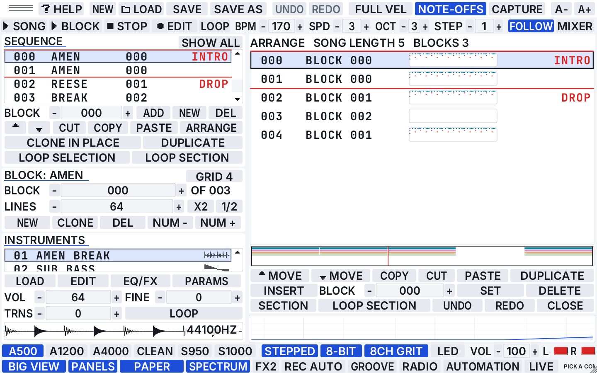
Instruments & samples
Loading, opening and naming an instrument
LOAD first asks what kind of instrument: SAMPLE (the sample browser), BUILT-IN SYNTH (SUB, REESE, RAVE, ROM, MORPH, ACID, TG 101, PAD, GRANULAR), VST3 / AU SYNTH, SAVED INSTRUMENT (one of yours), MIDI OUT, CV OUT or RECORD AUDIO.

- Double-click an instrument to open it: its EDIT page (the sample editor, or the synth's own page). An empty one asks what to LOAD.
- Rename it with right-click → RENAME..., or CmdR with the instrument list clicked last.
- Tab on an instrument's pages goes EDIT → EQ/FX → PARAMS → the pattern and round again; ShiftTab goes back.
The sample browser
SAMPLE opens the browser in place of the pattern, with tabs along the top for what the instrument plays: SAMPLES, VST / AU (your instrument plug-ins), MIDI OUT (hardware) and CV OUT (a modular; it asks first). Right-clicking an instrument offers the same. Every sample you highlight plays straight away, and the note keys or a MIDI keyboard play it at other pitches. Shortcut buttons go to Home, Music, Desktop, Downloads, Documents and Drives, and four FAV buttons hold your own folders (click an empty one to set it; Shift-click changes it, Alt-click clears it). Enter or a double-click loads the sample.
The sample editor
EDIT (or a double-click on the instrument or its little waveform) opens the editor. LOAD... (beside TOOLS...) puts another sample into this instrument, through the sample browser, and brings you back.

- Drag to select; grab either end of a selection to move just that end. The note keys and MIDI play the sample through the full instrument sound; SEL KEYS plays just the selection.
- CUT COPY PASTE DELETE CROP SILENCE REVERSE MAX VOL VOL - VOL + FADE IN FADE OUT TO MONO, and DRAW to draw the wave.
- TOOLS...: GAIN, NORMALISE, REMOVE DC, TRIM SILENCE, INSERT SILENCE, CROSSFADE LOOP (a smooth jump back), PITCH (semitones, resampled), SWAP LEFT / RIGHT, START / END from the selection, SAVE SAMPLE. SAVE... writes the sample to a WAV wherever you choose.
- START / END: drag the green [ and ] handles at the middle of the wave: only the part between them plays, the rest is shaded but kept. They're separate from the loop (which is cut at END);
9xxcounts from START. - Space stops whatever plays, the song too; when nothing does, it plays the sample.
- Loop: drag the S and E handles at the top of the wave; you hear the loop while you drag. PING-PONG plays it forwards then backwards.
No slices: the Sxx parts. With no slice points, Sxx plays one of 16 equal parts of the sample between START and END. The editor shows them, as Renoise shows its slices: faint lines across the wave and S00–S0F tags along the bottom (when there isn't room for all 16 tags, some are left out; zoom in to see them all). Move START or END and the parts move too. Add a slice point and the slices take over.
SXX PARTS: a longer break needs more parts. Click an Sxx tag (or SXX: 16 PARTS in the slicer, or the waveform's right-click menu) and pick 16 (one bar of 16ths), 32, 48 or 64 (four bars of 16ths, S00–S3F). Each bar starts with a stronger line; when the tags don't all fit they go every 2, 4, 8 or 16 parts, so they stay on the beats. Each instrument keeps its own; older songs keep 16. Past the last part, Sxx goes round again.
PLAY THRU (on / off, in the slicer or the waveform's right-click menu): on, a slice — from SLICE TO KEYS or Sxx — or an Sxx part starts at its point and plays on to the sample's END (and round its loop, if it has one), instead of stopping at its own end. Start a break from any hit and let it run; the next note or ECx cuts it. Each instrument keeps its own; it's saved with the song.
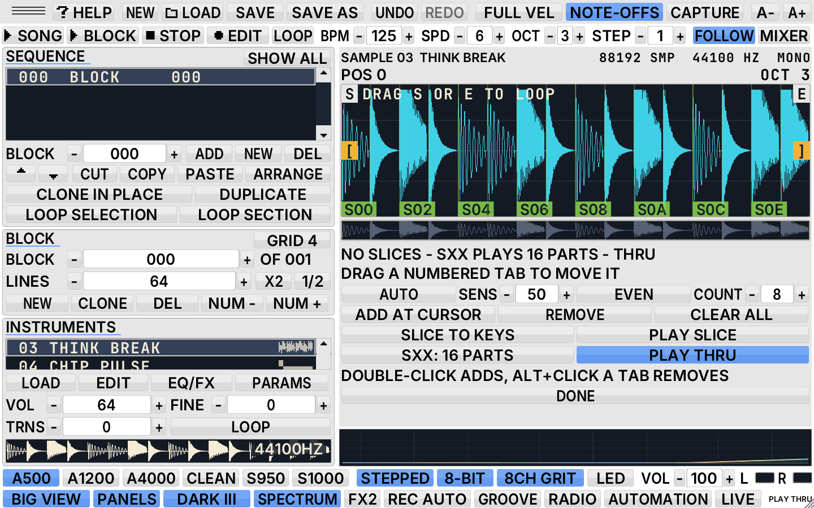
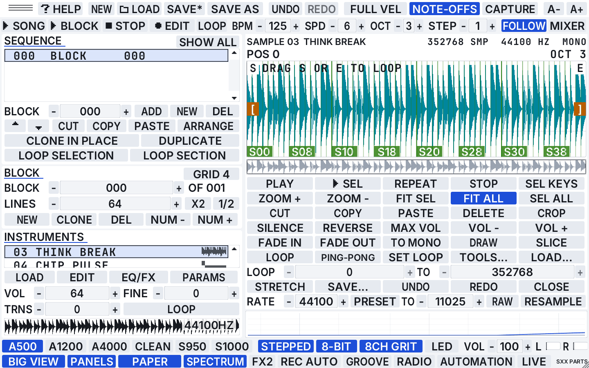
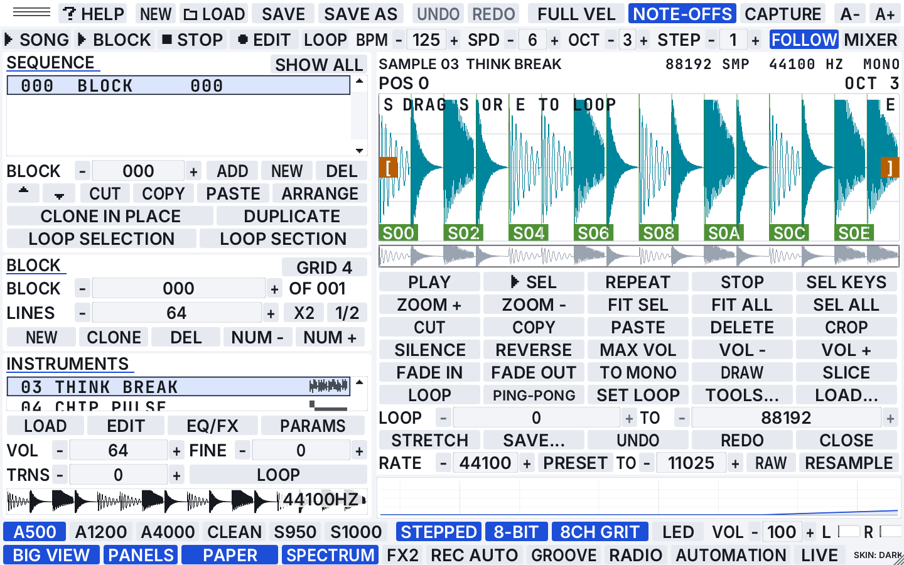
Rates
Each instrument has a RATE: the speed it plays at on C-3. Samples load at their own rate, so they sound as recorded. RATE changes it without touching the data (lower rate, lower and slower); RESAMPLE converts the data to a new rate and keeps the pitch, with RAW for the rough, unfiltered old-sampler way.
Slicing
SLICE opens the slicer. AUTO finds the hits (SENS sets how quiet), EVEN cuts equal slices. Drag a tab to move a slice point, double-click the wave to add one, Alt-click a tab to remove it. With SLICE TO KEYS on, C-3 plays slice 1, C#3 slice 2 and so on; without it, Sxx picks the slice. Every note plays a slice: past the last one they wrap round to slice 1 again, and below C-3 they count back from the last (with 8 slices, B-2 is slice 8 and C-2 slice 5), so a note in the wrong octave is never silent.
The BREAK page
Cmd6 — or right-click an instrument and choose BREAK PAGE... — opens one page for a break, start to finish. Cmd6 again, CLOSE or Esc goes back.
- The waveform shows the break's slices, each tinted and tagged with what it is: K kick (red), S snare (orange), H hat (blue), O anything else. Paula works it out from each hit's first 60 ms — how much low end, how noisy, how loud. Click a slice to hear it; right-click it to put it right when it guessed wrong.
- The markers — where each slice starts — are yours to fix. Drag one left or right to move it; it can't pass its neighbours, and the arrow keys nudge the one you picked (Shift for bigger steps). Double-click the wave to add a marker there: it lands on the nearest zero crossing, so the slice starts without a click. Double-click a marker, Alt-click it, or pick it and press Delete to take it away. Right-click has ADD A MARKER HERE and DELETE MARKER too. The first marker always stays at the start. The kinds are worked out again for the new slices, and every change can be undone. Slices are numbered left to right, so adding or deleting one changes which slice the notes after it play.
- AUTO finds the hits (SENS − / + for quieter ones); EVEN 16 cuts it into 16ths. BARS (1, 2 or 4) is how long the break is.
- MAKE BLOCK adds a new block after the current position with the break chopped onto TRACK, each slice where it falls, repeated to the block's end. CHOP HERE does it on the current block. FIT TO TEMPO (on to start with) sets BEAT SYNC so the break plays in time at any BPM; with KEEP PITCH as well, it's stretched to fit rather than repitched. PLAY / STOP (or Space) play the block.
- RE-EDIT: SHUFFLE (the rhythm stays, which slice plays changes — again for another), GHOST ROLL (the last quarter becomes a snare roll, quiet to loud), HALF-TIME, DOUBLE-TIME. TO PHRASE: the slices into a new phrase (see CHOP TO PHRASE).
- REBUILD it from its own kicks, snares and hats, 16 steps a bar: CLASSIC '94 (the cut-up amen — kick pushed, a ghost snare before the second half, a snare on the last 16th), ROLLER, TWO-STEP, HALF-STEP. Ghost snares go in quiet, as
C14. - 4 VARIATIONS makes four new blocks after the current one, each a different rebuild with different hits, the last ending in a ghost roll.
- BREAK LAB (the LAB row) writes jungle edits for you on the break's track. STYLE (click for the next): '94 ROLLERS (busy, rolling, ghost snares, hats a touch late), '96 TECHSTEP (tight and sparse, the kick skipping, hats cut short), AMEN CHOPS (reversed snares, pitched-down hits, stutters), DRILL'N'BASS (buzzing rolls, stutters, pitch everywhere), '93 HARDCORE (busy breakbeats under the stabs, snare rolls into every drop, hits pitched up), RAGGA (the amen doubled up under the MC: double kicks, ghosts, rolls, swung hats), LIQUID (a smooth two-step with few edits). WILD − / + sets how many edits (0 = just the groove). EDIT ME writes a whole new edit — a groove from the style, then ghost snares, rolls (
Rxy), reversed hits (U01), pitch drops (Ixx), stutters cut short (ECx), a gap before the drop, now and then a half-time bar, with every second bar a fill. Press it again for another. MUTATE changes a few things and keeps the rest, so an edit can evolve. RE-ROLL BAR writes just one bar again and leaves the others alone: click a row of the grid (a row is a bar) to pick it — it's outlined — and press until that bar is right. In the grid an edited hit shows its edits: R roll, < reversed, P pitched, X cut short. It's all ordinary notes and commands, every press one undo step. - The grid at the bottom is the block's track, a bar (16 lines) a row, each note tinted by kind with its slice number; it lights the line that's playing. Every change is one undo step.


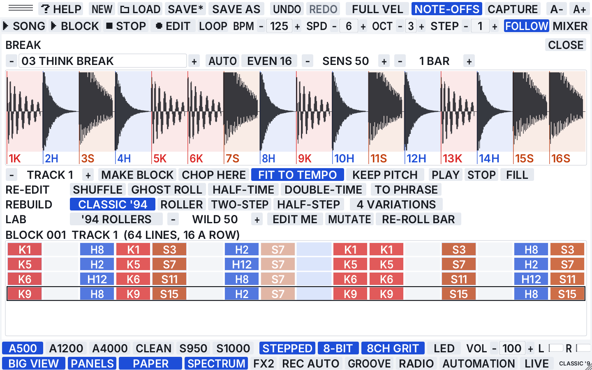
Groove and break tools
- CHOP TO PHRASE... (right-click an instrument): the break cut up — BY ITS HITS, ITS OWN SLICES, or 4, 8, 16, 32 or 64 EQUAL SLICES — into a new phrase, every hit a note (
C-3= hit 1), each where it falls, at enough lines a beat that every hit has a line. TRANSPOSE is off, so any note plays the chopped break. The PHRASES page opens on it. The BREAK page's TO PHRASE does the same with its slices. - CHOP TO PATTERN (right-click an instrument): the break is sliced by its hits (if it has no slices yet) and laid out as notes on the cursor's track, each slice on the line where it falls, with SLICE TO KEYS on.
- Right-click a highlight: REVERSE THE LINES, STUTTER (the first quarter over and over), RATCHET (rolls that speed up across it,
R40toR10) and RE-SEQUENCE THE SLICES (the rhythm stays, the slices shuffle; again for another order). - FILL: right-click a highlight → FILL WITH THE FIRST NOTE, EVERY... — every 1, 2, 3, 4, 8 or 16 lines, the first note repeated down the highlight (the lines between emptied). With no highlight, right-click a note → FILL DOWN FROM HERE, EVERY... fills to the end of the block.
- GROOVE (bottom row): SWING 16THS, SWING 8THS, LAZY BREAK, PUSHED HATS or HUMANISE, at 25–100%. Some lines' notes play a little late as the song plays; the pattern isn't changed. Notes with their own
Mxx,EDxor a slide keep their timing.
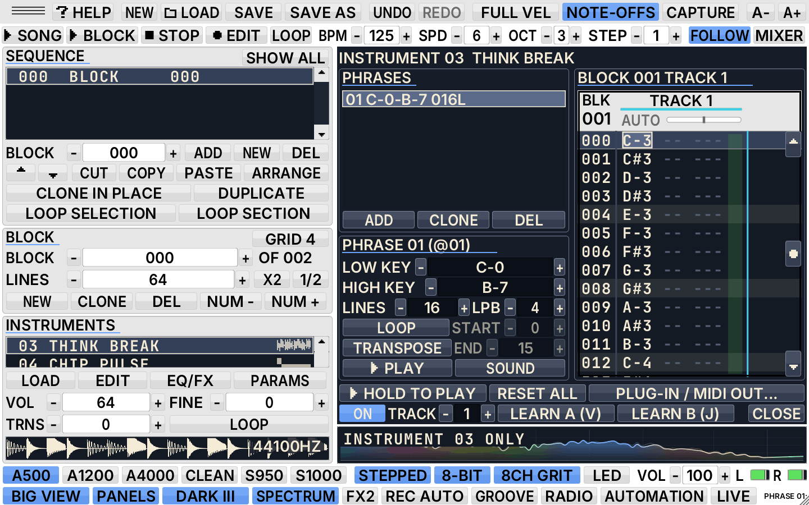
Time stretch
STRETCH opens the old-sampler stretch: CLASSIC (the Akai sound, matched to recordings of the real thing), REVISED (cleaner joins), HARD (no blending) and AKAIZER (Akaizer v1.2's granular method, rebuilt). Set TIME %, SEMI and CENTS and the CYCLE length; FIT TO LINES makes the selection last a number of lines at the song's tempo. PREVIEW, then APPLY.
Stems: splitting a sample
TOOLS... → SPLIT INTO STEMS... in the sample editor splits the sample into DRUMS, BASS, OTHER and VOCALS: four new instruments in the first empty slots, stereo at 44.1 kHz. It runs Demucs v4 (Meta AI Research's hybrid transformer) on your computer — nothing is uploaded.
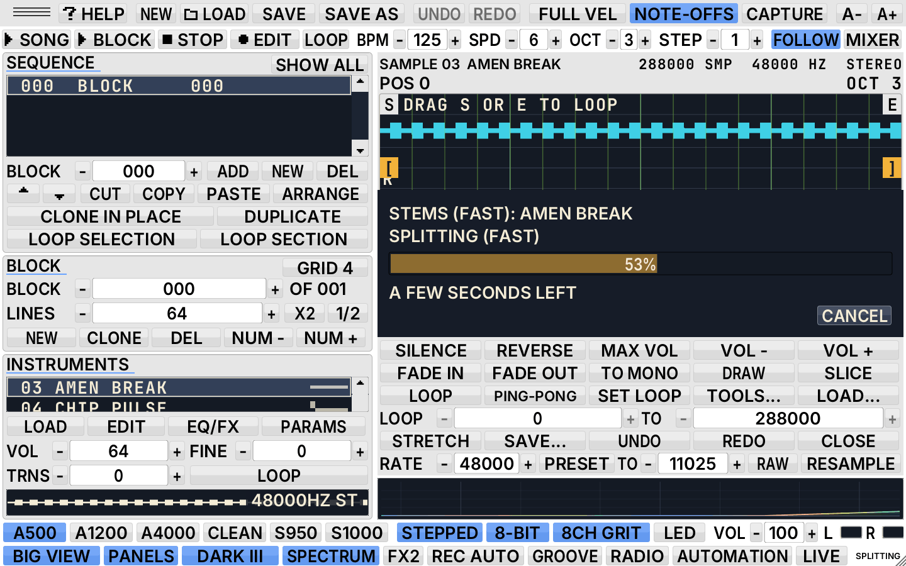
- BEST: four fine-tuned models, each the specialist for its stem — the cleanest split, about four times slower. FAST: one model, for a quick listen.
- The models download once, the first time (FAST about 175 MB, BEST about 700 MB), checked against their SHA-256.
- As a guide, FAST takes about as long as the sample lasts and BEST about four times as long (more on an older computer). A box shows the progress and the time left; CANCEL stops it. The four stems add back up to the original, and each is one undo step.
Sampling: recording audio
Record straight into the selected instrument, from an audio interface, the mic or line-in, or from the app's own output. Open the SAMPLE page with Cmd4, Sample Audio… in the View menu, right-click an instrument → SAMPLE (RECORD AUDIO)…, or click an empty instrument's NO SAMPLE - CLICK TO RECORD.

| CONTROL | WHAT IT DOES |
|---|---|
| INPUT RESAMPLE RADIO | Record the audio input (chosen in AUDIO/MIDI SETTINGS…, bottom right), or everything the app plays: play the song or a block, or jam, and record what comes out — or the internet radio as it comes in (see below) |
| MONITOR | Hear the input through the app. Off to start with: with a mic, use headphones or it feeds back |
| STEREO MONO LEFT RIGHT | What goes into the instrument (MONO mixes left and right) |
| MANUAL | Records from the moment you press RECORD |
| THRESHOLD | RECORD arms it; it starts when the sound goes over the THRESHOLD level (the red line on the meter), keeping the 20 ms before so the attack isn't cut |
| WITH PLAYBACK | RECORD arms it; it records from when the song or block starts to when it stops: one block, exactly |
| INPUT GAIN | −24 to +24 dB. The meter shows the level, a peak hold and a CLIP light |
| RECORD STOP | Start (or arm) and end it (R). Up to 5 minutes. It carries on if you go to another page |
| KEEP AGAIN | The take into the instrument, one undo step (Enter), or thrown away and recorded again (Backspace) |
| TRIM SILENCE NORMALISE | Cut quiet at both ends; bring the loudest point to full level. Both on to start with |
| CLEAN AMIGA S950 | How the sound gets in. CLEAN (the default): the interface as it is. AMIGA: 8-bit at 8363 / 16726 / 22050 / 28867 Hz with no anti-alias filter (the aliasing grit). S950: 12-bit at 7.5K–48K through its filter, which follows the rate. You hear it as you sample, with MONITOR on |
| 8 BIT 12 BIT | The bits, for either sampler (an S950 at 8 bits, an Amiga at 12) |
| INPUT DRIVE | 0 to +24 dB into the sampler's input: the S950 goes soft and fat then hits the ceiling (the CLIP lights), like the classic overloaded records; an Amiga sampler just clips |
| AMIGA RATE | CLEAN only: NONE keeps the recording's rate; 8363, 16726, 22050 or 28867 Hz resamples it as you keep it, at the same pitch |
The first time on a Mac, macOS asks whether Paula's Revenge may use the microphone: say OK, or the input is silent (System Settings → Privacy & Security → Microphone changes it later). After KEEP it's a sample like any other: EDIT to slice or loop it, and it's saved in the song.
Internet radio
RADIO (bottom row, or Cmd5) opens stations from all over the world to listen to and sample from — straight into the sampler, no effects. The stations come from Radio Browser, a free community directory; it needs an internet connection.

- GENRE (jungle, drum and bass, breakbeat, dub, reggae, techno, house, jazz, funk, soul, hip hop, classical, world…), COUNTRY (the busiest first), or type to search by name or genre and press Enter. STARRED and RECENT are your starred stations and the last 30 played.
- Stations that worked at the directory's last check are listed, the most played first, with their format: MP3, AAC, AAC+ (HE-AAC) and HLS — the playlists of short pieces big broadcasters such as the BBC use. AAC is decoded by the Mac's or PC's own decoder. Ogg, Opus, FLAC and encrypted streams aren't played yet. The last lists are saved, so the page opens straight away, even offline.
- Double-click a station (or Enter, or PLAY). It gathers 3 seconds before it starts, so a slow connection doesn't stutter; a dropped stream is tried again by itself (
RECONNECTING 2/5), waiting longer each time. NOW PLAYING shows the track the station says is on. - VOL is its own. The radio goes straight to the output: not through the mixer, effects or the Amiga / Akai sound, and never into renders or bounces. It plays on while you work on other pages (RADIO stays lit).
- GRAB BUFFER 5 10 20 30 seconds: the radio always keeps that much of what it just played. GRAB puts it in the first empty instrument, named after the station, exactly as it came off the stream (stereo, not trimmed or normalised), stops the radio, and opens it in the sample editor. One undo step.
- Streams are copyrighted: sample for your own sketches, and clear samples before releasing them.
Instrument VOL and switching off
VOL is a level for the whole instrument on top of each note's Cxx. Any instrument can be switched off with its ON button (on its PARAMS page): its notes are silent and the list shows it dimmed with OFF.
Sound shaping
PARAMS opens the current instrument's page. Everything starts off or neutral, so MODs and older songs sound exactly as they did.
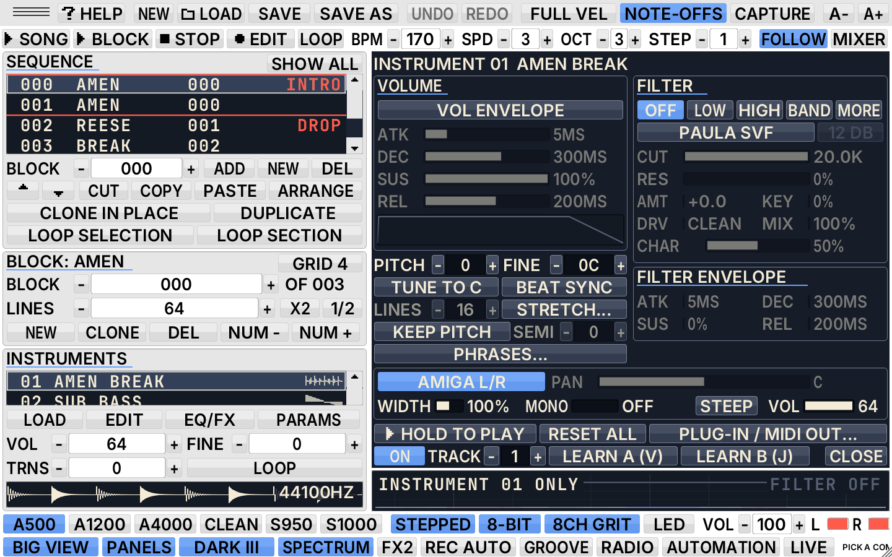
- Volume envelope: VOL ENVELOPE on, then ATK, DEC, SUS, REL (1 ms – 10 s). With it on, a note-off starts the release instead of cutting the note.
- Filter: OFF / LOW / HIGH / BAND, and MORE for NOTCH, PEAK and ALL PASS. MODEL picks the filter from all of Mega Synth's (the same code): PAULA SVF (the original), the clean ones (Standard LP, Sallen-Key, State Variable, Switched Capacitor), the analogue models (Ladder, Steiner-Parker, OTA, Polivoks, MS-20, Oberheim, SEM, Minimoog, Arp Odyssey, CS-15, SH-2), the acid ones (Acid Approx, TB-303) and the character models (formants, vowel morph, combs, phaser, resonator, ring, shifter, power and wave-shaper filters, resamplers, DJ filter). A classic model starts at Low Pass and its own SLOPE (6–24 dB): the original circuit. A character model's CHAR slider is labelled with what it does (VOWEL, DECAY, STAGES…). DRV and MIX work on every model but PAULA SVF, and the curve under the page is the real response.
- Filter controls: CUT, RES, AMT (how far the filter envelope moves it) and KEY (how far the cutoff follows the note). The filter envelope has its own ATK, DEC, SUS, REL. The spectrum strip under the page shows the instrument's sound with the filter's curve over it and a line at the cutoff.
- Pan: AMIGA L/R follows the Amiga track layout; switch it off to give the instrument its own PAN.
- UTILITY (the row under PAN, and on a plug-in instrument's page): WIDTH 0% (mono) to 200%; MONO makes everything below a frequency mono (OFF, or
<20HZto<500HZ, a smooth 24 dB/octave crossover, or 48 with STEEP) — mono the bass; VOL is the instrument's VOL itself, so moving either one moves the other. Before the instrument's own effects; not on MIDI out or CV out. At 100% and OFF it does nothing. - Spectrum: every spectrum (the strip, the filter, the EQ pages) is drawn as an analyser — a smooth line at 1/12 octave, the fill fading under it, a faint peak hold above and a light grid. While PARAMS (or a plug-in instrument's page) is up, the spectrum strip under it shows just that instrument's sound, marked
INSTRUMENT 01 ONLY. - Tuning: PITCH (±48 semitones) and FINE (±100 cents). TUNE TO C listens to the sample and sets them so
C-3plays a C. - BEAT SYNC (like Renoise): the sample lasts LINES lines at
C-3at any tempo, repitched live to fit. STRETCH... opens the time stretch set to those lines, to fit it at its own pitch instead. - KEEP PITCH: BEAT SYNC stretches the sample instead of repitching it, with the old-sampler stretch — the break stays at its own pitch and keeps the grainy 90s sound. The stretch is made again whenever BPM, SPD or LINES change, and the original is kept: switch KEEP PITCH off and it's back exactly as it was (songs save the original, and make the stretch again when they load). Right-click KEEP PITCH for CLASSIC (the Akai S-series sound) or AKAIZER (smoother grains). SEMI (−24 to +24) moves the pitch without changing the length — a break pitched up and still in time, no chipmunk. Tempo changes while playing (
Fxx) are followed by repitching a little until the next stretch. Editing the stretched sample keeps the stretch as the sample (KEEP PITCH goes off). - ▶ HOLD TO PLAY or the keys to hear it; RESET ALL puts everything back; double-click any slider for its default.
- ON switches the instrument off and on. To switch it from the pattern, pick a track, press LEARN A (V) or LEARN B (J), then click ON: that track's
V00switches it off andV01–VFFon. - PLUG-IN / MIDI OUT... plays the instrument with a VST3 / AU instrument or with your hardware instead (see Plug-ins and MIDI out).
Instrument EQ and effects
Every instrument — a sample or a VST3 / AU instrument — has its own EQ and three insert slots of its own, like a mixer strip's: the built-in filter, drive, compressor, delay, reverb and chorus, or a VST3 / AU plug-in. EQ/FX on the instruments panel, next to LOAD and EDIT, opens them (a plug-in instrument's page has them too).

- EQ/FX opens the EQ AND EFFECTS page: the mixer's EQ graph for this instrument alone — up to 8 points, double-click to add one, drag, the wheel for Q, right-click for its type, EQ FLAT for none — with the instrument's own spectrum behind it. Its 3 effects are on the right, and IN THIS ORDER shows the way the sound goes: the sample or plug-in, filter and envelopes, UTILITY, this EQ, these effects, then its mixer track. BACK returns to the instrument.
- The EQ is saved in the song, its changes are undo steps of the instrument, and renders and bounces include it. Not on MIDI out or CV out.
- Click a slot to open it on the mixer's effect page; BACK returns to the instrument. Right-click for OPEN, BYPASS, COPY, PASTE and CLEAR. A lit slot is on.
- The sound goes through the instrument's effects first, then into the strip of the track it plays on. Every note goes through the one chain, so a delay or reverb carries on across notes; its output goes to the track of the instrument's latest note.
- The effects belong to the instrument: saved in the song, undo steps, and copied with it (COPY / PASTE / DUPLICATE). RENDER WAV and bouncing include them. A plug-in's own delay on an instrument slot isn't compensated.
Macros
The EQ AND EFFECTS page has MACROS: four knobs, each turning up to four controls of the instrument's own effects together. TARGETS... adds one (the insert, then the control); click a target there to turn it the other way or remove it. Envelopes and V / J can turn them too.

Tables
A TABLE is the M8's trick: 16 rows that step along with every note an instrument plays. One note can arpeggiate, ratchet, flam, pan or open its filter in steps, and none of it is written in the pattern. Every instrument has one, samples and synths alike. Right-click an instrument → TABLE..., or Cmd9.
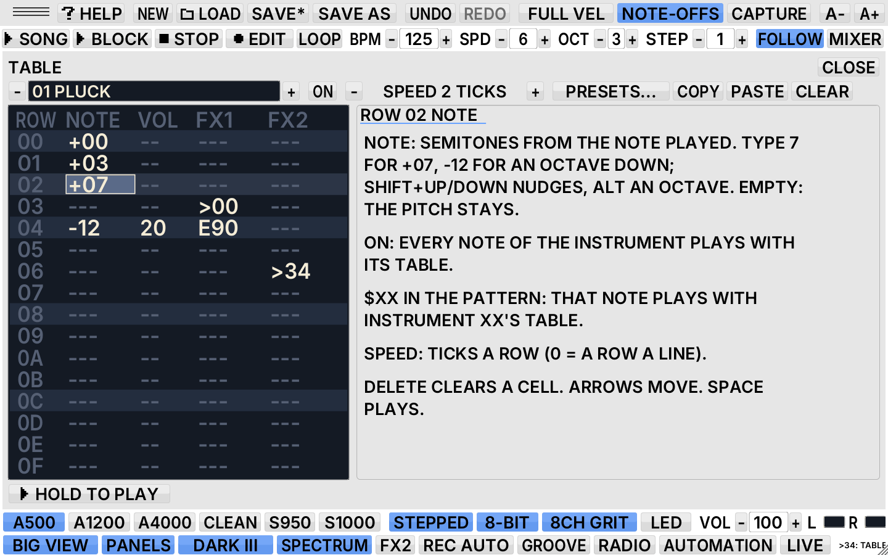
| NOTE | Semitones from the note played: +07 a fifth up, -12 an octave down. Empty: the pitch stays. |
| VOL | The note's level, 00–40 hex (40 = as played). Empty: it stays. |
| FX1, FX2 | A command each (right-click for the list). E90 plays the note again (ratchets, flams); 9xx / Pxx again from a point; Sxx a slice from here on; Cxx, EC0 (cut), 8xx, 1xx / 2xx, Txx, the filter (L H W Q), Oxx, Zxx, Rxy, Nxx, U01, and on a track Vxx / Jxx. |
>xy HOP | Back to row y: x = 0 for ever, or x more times and then on. |
| SPEED | Ticks a row: 1 every tick (fast arps), 6 a line at speed 6, 0 a row a line. Without a HOP the 16 rows play once and it holds where it ended. |
| ON | Every note of the instrument plays with it. Off, it's kept, for $xx. |
$xx | In the pattern: this note plays with instrument xx's table; $00 none. Keep tables on spare instruments and pick one per note. |
Typing: arrows move; NOTE takes digits (- first for down), Shift+↑/↓ nudges, Alt an octave; VOL two hex digits; FX a command letter (or >) then two hex digits. Delete clears. HOLD TO PLAY (or Space) hears it, and the row playing lights up, from the song too. PRESETS... has 14 to start from (arps, trills, FLAM, RATCHET x4, BUZZ ROLL, 808 ZAP, FILTER PLUCK, PAN SWEEP, GATE, FADE OUT…); COPY / PASTE moves a table between instruments.
On a synth, NOTE bends the pitch within its BEND range, smoothly; further than that it plays the note again, moved. VOL sets how hard those notes are struck. A table can't hear the note's OFF, so a held synth note's release comes from its own envelope.
ROW NOTE VOL FX1 FX2 00 +00 40 --- --- a flam into a ratchet: 01 --- 18 E90 --- a quiet hit... 02 --- 40 E90 --- ...then full 03 +12 30 E90 --- up an octave 04 --- --- --- >12 back to row 2, once more
Phrases
A phrase is a little pattern stored with an instrument: its note plays the phrase instead of the sample, as in Renoise. An instrument can have up to 16. PHRASES... at the bottom left of the PARAMS page turns it over to them; SOUND turns it back.
- The list: each phrase's number, keys, length and LOOP. ADD makes an empty 16-line one, CLONE copies the one picked, DEL deletes it. Right-click one for EDIT IT IN THE PATTERN, MOVE UP / DOWN, ALL KEYS, its TRACK, ANOTHER BLOCK... and DELETE.
- The phrase, on the right, is written in the pattern editor itself, showing just its track: everything the pattern does works — note keys, 1 for OFF, the command list, STEP, Shift-click or drag to highlight, Delete, copy / cut / paste, transpose, undo. EDIT is always on; the octave and STEP are the pattern's. Write it from C-3; the note played moves it. A note with no instrument plays this one's sample.
- LOW KEY / HIGH KEY: the notes that play it. A note plays the first phrase that holds it; a note none holds plays the sample.
- LINES: its length. LPB: lines a beat — 4 is the song's speed, 2 half, 8 double.
- LOOP with START and END: round from START after END until the next note or OFF.
- TRANSPOSE: on, its notes follow the note played; off, they play as written.
- PLAY hears it from C-3; the line playing lights up, in the song too.
@xx in an effect column picks the phrase: @01 the first… @10 the sixteenth; @00 plays the sample. Without it, the keys decide. A phrase stops at its end (unless it loops), on the next note, or on OFF.
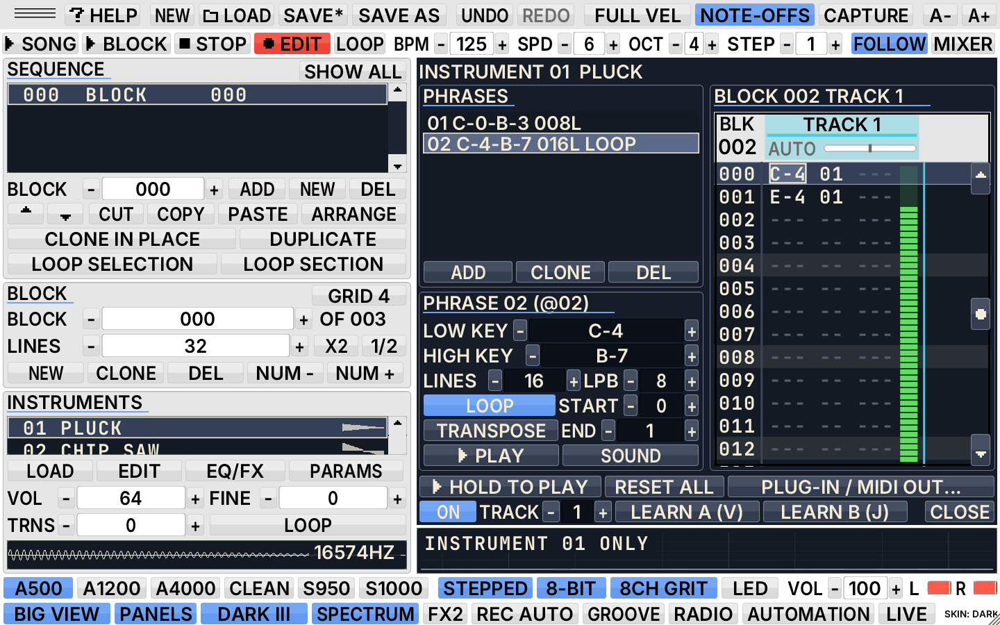
Resampling in one step
ShiftCmdB (or RESAMPLE in the bounce menu) records the highlighted notes — or the whole block — with all their effects into a new instrument: cut to its length, a slice a beat, notes playing the slices, BEAT SYNC'd to stay in time at any tempo.
Following a MIDI clock
View → Follow MIDI Clock: another app or a drum machine leads. The tempo follows its clock; Start, Continue (from the last song position) and Stop work too.
Paula & the Akais
The output strip picks the machine you hear. None of these change your samples; switch between them any time.
| CONTROL | WHAT IT DOES |
|---|---|
| A500 | The A500 (and A600, A2000): a 4.42 kHz output filter, warm and dull |
| A1200 | The A1200: much brighter, about −3 dB around 14 kHz, as measured |
| A4000 | The A4000: about 4.6 kHz, as measured |
| CLEAN | Paula with no output filtering |
| S950 | Akai S950: 12-bit, stepped variable-rate playback, its 6-pole filter |
| S1000 | Akai S1000: 16-bit, interpolated playback, clean 44.1 kHz-style output |
| STEPPED | Paula's stepped playback, exactly as the chip makes it (off = smooth) |
| 8-BIT | Samples play at 8-bit resolution |
| 8CH GRIT | OctaMED's 8-channel sound on every track. The Amiga has 4 channels, so 8-channel trackers mixed two tracks into each (1+5, 2+6, 3+7, 4+8; 9+13, 10+14… on tracks 9–16) at half level and squashed them back to 8 bits; this does the squashing, then brings the level back up. On for the Amiga models. Every track plays at full level either way, and a safety limiter stops eight loud tracks clipping (it holds its level for a moment rather than following each wave, so a loud sub comes through clean instead of buzzing) |
| LED | The Amiga's "LED" low-pass filter (12 dB/oct at 3.2 kHz) at the start of the song (E00 / E01 switch it while playing) |
| SEP | Right-click a machine button (or View → Stereo Separation...): how far tracks lean to the Amiga sides (1, 4, 5, 8 left; 2, 3, 6, 7 right). 20% to start; 0% = all centred, 100% = the full Amiga split |
| VOL | The master volume after everything, 0–200% (100 = as it is), beside the meter |
How the Paula modes work
- The staircase, without false notes. Paula holds each sample until the next, so its output is a staircase whose copies of the sound go far above hearing. Played straight, those copies fold back as out-of-tune tones. With STEPPED on, every change of level is a band-limited step instead: everything a real Paula puts out below 20 kHz is there, its own staircase images included, and nothing folds back. It sounds the same at 44.1, 48 or 96 kHz.
- Volume below 64. At 64 a real Paula changes level exactly when the next sample is due; below 64 it works on a fixed 55.4 kHz grid, so each change waits for the next grid point. That adds a faint grit to everything not at full volume. A500, A1200 and A4000 do this; CLEAN doesn't.
- The filters are the real ones: the A500's 4.42 kHz RC filter (100 nF, 360 Ω), the A1200's and A4000's measured responses, the LED filter as a Butterworth. (From Henryk Richter's Amiga Paula vs. System Theory; the band-limited steps follow OpenMPT and Antti S. Lankila.)
Panning, in order
8xxin the pattern (an absolute position, not scaled by SEP).- The track's pan, the bar under its name (AUTO = none).
- The instrument's PAN, when its AMIGA L/R is off.
- Otherwise Amiga style, by SEP. Stereo samples play centred with their own stereo image.
The mixer
MIXER on the transport row (Cmd2) opens the mixer across the window; Esc or Cmd1 goes back. The keys still play the current instrument while it's open.

| STRIP PART | WHAT IT DOES |
|---|---|
| Name / EQ | Opens the track's channel page. EQ is lit when a band is on; EQ AB when automation knobs are set. |
| 3 insert slots | Click for the effect page; Shift-click bypasses (a bypassed slot is dimmed). |
| A, B | How much goes to SEND A / B. AP / BP = pre-fader. Double-click = off. |
| PAN | The track's pan. Double-click = AUTO. |
| Fader | −INF to +6 dB with the meter beside it. Shift = fine, double-click = 0 dB. |
| M / S | Mute and solo. |
Duck and the low-end check
DUCK (top of the strips page) opens the SIDECHAIN DUCK panel under the strips. You choose which tracks make the duck and which tracks get ducked:
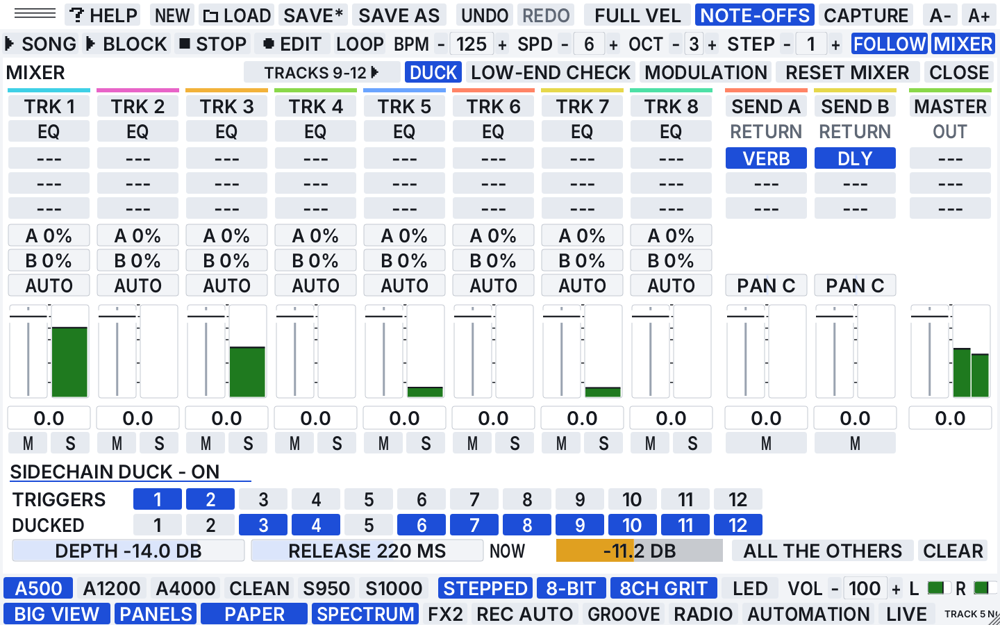
| TRIGGERS | The top row: click the tracks whose hits make the others dip — the kick, or the kick and the break. Any number of them. |
| DUCKED | The bottom row: click the tracks that dip — the bass, the pads, the reese. ALL THE OTHERS lights every track that isn't a trigger. A track is one or the other, never both. |
| DEPTH | How far they dip at a full hit: about −14 dB at 80%, SILENT at the top. The dip is full with the triggers at −12 dB or louder. |
| RELEASE | How quickly they come back after each hit, 20 ms to 1 s: short for a tight duck, long for the pump. |
| NOW | The meter: how far down the ducked tracks are right now. |
| CLEAR | Takes the duck off. Every change is one undo step; the duck is saved in the song. |
The ducked tracks dip after their inserts and before their fader and sends, so their reverb and echo dip with them. A duck made with an older version (a FOLLOWER modulator) is still under MODULATION and still works. DUCK and LOW-END CHECK share the space under the strips.
LOW-END CHECK opens a panel under the strips that listens to the master while the song plays and says, with a lamp (green fine, amber worth a look, red fix it):
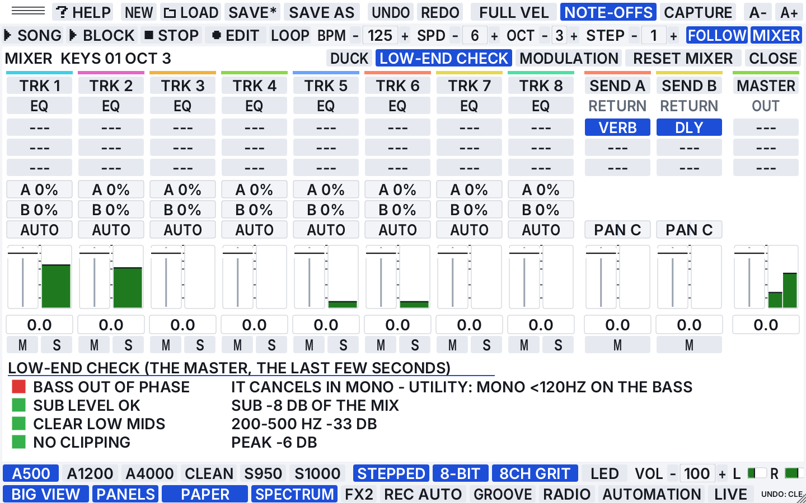
| BASS MONO? | Below 120 Hz, are the sides the same? Out of phase, the bass cancels on a club system or a phone. Fix: the bass's UTILITY MONO <120HZ. |
| SUB LEVEL | The sub (below 80 Hz) against everything. Too much: turn it down, or DUCK it under the kick. |
| LOW MIDS | How much is 200–500 Hz. Muddy: cut there on pads and breaks. |
| CLIPPING | Samples at full scale in the last few seconds: turn the master down. |
Stopped, it says PLAY THE SONG. It's a guide, not a rule.


- Channel page — the EQ: up to 8 points on the curve, over the track's live spectrum, smoothed with a faint peak-hold line (SPECTRUM switches it off; it stays put when you stop). Right-click SPECTRUM or an empty part of the graph for its colour: ICE, CYAN, GREEN, LIME, AMBER, ORANGE, MAGENTA or VIOLET. < > step through the tracks.
- Double-click the graph to add a point there: a LOW SHELF below 80 Hz, a HIGH SHELF above 10 kHz, a BELL in between.
- Drag a point: across is frequency, up and down is gain, with a big readout as you go. The wheel sets a bell's Q.
- Right-click a point for its type (BELL, LOW / HIGH SHELF, HIGH- / LOW-PASS), SWITCH OFF, RESET GAIN and REMOVE POINT; Delete removes the selected one.
- Under the graph: the selected point's type, ON, REMOVE POINT, FREQ, GAIN and Q. EQ FLAT removes them all. Songs from before v0.25 keep their bands that were on.
- Effect page: EFFECT: … opens the menu of effects in groups — REVERB, DELAY, MODULATION, DRIVE & CRUSH, FILTER & DYNAMICS, PLUG-IN (VST3 / AU), EMPTY — then the effect: 25 built in. PRESETS... has the factory presets and yours. Every page has BYPASS and DEFAULTS; more than 6 controls go in two columns.
- Returns: SEND A starts with a reverb and SEND B with a delay, fully wet, silent until a track sends to them.
- Dub throws:
!xyon a note's line throws that track into the dub echo on SEND B —xhow much (1–F),yfor how many lines (0 = just that hit, until the track's next note).!0yrides the echo's feedback up (!0Fnearly endless),!00puts it back. Type!with Shift+1. The first!in a song makes SEND B a dub echo — DUB DELAY into SPRING — if SEND B is still as a new song has it (an undo step of its own). The throw fades in and out over a few milliseconds, so it never clicks, and the echoes ring on after it. - Delay compensation: plug-ins that give their sound back late (lookahead limiters, linear-phase EQs) are lined up, so every track stays in time, sends included. The strips page title shows the total delay.
A mixer with nothing changed is skipped, so the song sounds exactly as it would without one. Everything in it is saved in the song, undoable and in renders.
The studio effects

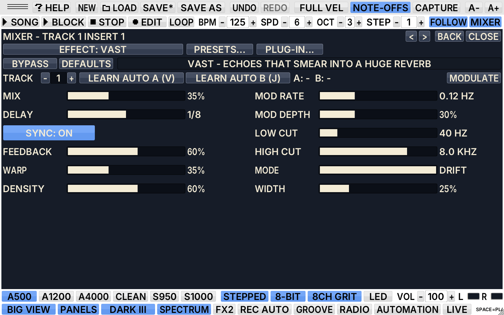
| EFFECT | WHAT IT IS |
|---|---|
| VAST | Echoes that turn into a huge reverb: 8 delay lines feeding each other. DENSITY at 0 gives clean repeats on the beat, turned up a cloud; WARP smears each repeat more; FEEDBACK at 100% goes on for ever. DELAY in ms or, with SYNC, a note length. MODE: NEBULA, ABYSS (longer, darker), BLOOM (swells in), DRIFT (wandering lines). |
| SPACE | A room, plate or hall: SIZE, DECAY 0.3–40 s, PRE-DELAY with PRE ECHO, DAMP, LOW CUT, MOD, CHARACTER (GROUNDED, AIRY, COSMIC), SHIMMER (an octave up in the tail), FREEZE (holds the tail) and WIDTH. |
| TAPE ECHO | A tape loop with three heads at 1, 2 and 3 times TIME (HEADS picks them). FEEDBACK past 100% for runaway dub (the tape saturates, it doesn't explode), WOW, FLUTTER, SATURATE, TONE, WEAR (hiss, dropouts), SPREAD. |
| ENSEMBLE | The polysynth bucket-brigade chorus: MODE I, II, I+II or STRINGS (three voices: the string-machine sound), RATE, DEPTH, WIDTH, TONE, NOISE. |
| ROOMS | A room, chamber, hall or plate (TYPE) with early reflections: SIZE, DECAY, PRE-DELAY, EARLY (reflections against the tail), DAMP, LOW CUT, HIGH CUT, MOD, WIDTH. |
| SPRING | An amp's spring tank: 1–3 SPRINGS, DECAY, TONE, DRIP (the splash on hits), DRIVE. |
| DUB DELAY | Repeats through a band-pass FILTER with RESO and DRIVE, feedback past 100%. HOLD loops what's in it and lets nothing new in. PING, WOBBLE. |
| BBD DELAY | An analog bucket-brigade echo up to 1 s: darker the longer it is. MOD RATE, MOD DEPTH, AGE (hiss, duller), DRIVE. |
| MULTI-TAP | Up to 8 TAPS in a PATTERN (STRAIGHT, DOTTED, TRIPLET, SWING, SPEED UP, SLOW DOWN, SCATTER), each quieter by DECAY, bounced by SPREAD. |
| GRAIN DELAY | MODE REVERSE plays each stretch backwards; GRAINS sprays grains from the past. PITCH −12 to +12, SPRAY, DENSITY, FEEDBACK. |
| PHAT CRUSHER | In the spirit of Camel Audio's CamelCrusher / CamelPhat. TUBE (warm, uneven harmonics) and MECH (harder, buzzy, raspy) distortion, blend either or both; a resonant low-pass (CUTOFF, RES); a one-knob compressor, COMPRESS, with PHAT for a slower, heavier squash and a low-end lift; VOLUME and MIX (parallel crunch). Presets: WARM BUS, PHAT BREAK, CRUSHED KICK, REESE GRIT, MECH FUZZ, DARK SQUASH, PARALLEL SMASH. |
| DIMENSION | 4 modes of wide, clean stereo that sums back to mono cleanly. |
| FLANGER | RATE, DEPTH, MANUAL, FEEDBACK (±), STEREO; THRU-ZERO sweeps through the dry sound for the tape-flanging cancel. |
| PHASER | 4, 8 or 12 STAGES, RATE, DEPTH, CENTRE, FEEDBACK (±), STEREO. |
| ROTARY | A spinning organ speaker, horn and drum: FAST switches speed and they ramp like the real thing (ACCEL). HORN balance, DRIVE, WIDTH. |
| TREMOLO | TREMOLO, AUTO-PAN or HARMONIC; RATE or SYNC; SHAPE sine to square; STEREO. |
| FREQ SHIFTER | SHIFT moves every frequency by the same Hz (spirals with FEEDBACK); RING MOD for metallic, robotic tones. |
| AUTO-FILTER | Low-, band- or high-pass moved by an LFO (synced or free) and by the sound's own level (ENV AMOUNT ±, ENV SPEED): envelope funk, wah, sweeps. |
| MORPH FILTER | In the spirit of E-mu's Z-plane: a MODEL is two filter shapes and MORPH glides between them — AH > EE, OH > AH, OO > EE, TALK, PHASER, COMB, WAH, ACID, LOW > HIGH, BELLS, SCREAM, DARK > BRIGHT. FREQ moves the shape, EMPHASIS sharpens it; an LFO and the sound's level move MORPH: a break that talks. |
| The originals | FILTER, DRIVE, COMP, DELAY, REVERB and CHORUS are still there, in their groups. |
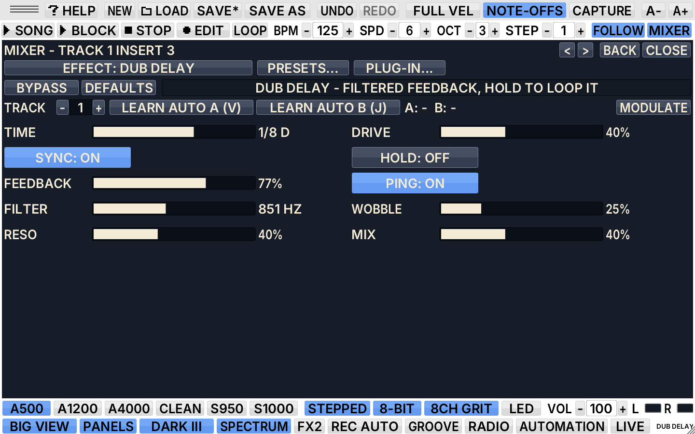

- Presets: PRESETS... lists the factory presets, then yours as MY …. SAVE THESE SETTINGS AS MY PRESET... keeps them under a name on this computer, for any slot in any song; DELETE ONE OF MY PRESETS... removes one. Choosing a preset is one undo step.
- Every control glides to a new value (no zipper noise), so they all automate smoothly with
VandJ. The saturation runs at twice the sample rate, and everything is true stereo. - Songs that use VAST, SPACE, TAPE ECHO or ENSEMBLE need v0.34 or later; the others, v0.35.
Plug-ins
Effects in the mixer
On any insert slot's effect page press PLUG-IN.... The first time, it looks for the plug-ins on your Mac, each one in a separate hidden copy of the app, so one that crashes can't take Paula's Revenge down. Double-click one to load it; OPEN PLUG-IN WINDOW shows its own controls. To find one, just type: the list narrows to every word in the name, maker or format (VALHALLA, U-HE ZEB); Esc clears it. Favourites: right-click a plug-in (or FAVOURITE) to star it — stars come first, and FAVOURITES ONLY shows just them. The instrument list works the same way. Its settings are saved in the song. If a song uses a plug-in this Mac doesn't have, the slot shows !NAME, passes the audio through and keeps the settings.
Instruments
Pick an instrument, press LOAD and the VST / AU tab (or right-click the instrument → LOAD A VST / AU SYNTH...), then double-click a plug-in. (The SYNTHS tab has the built-in SUB, REESE, RAVE and GRANULAR synths, below.) Type to search. PARAMS → PLUG-IN / MIDI OUT... gets there too.
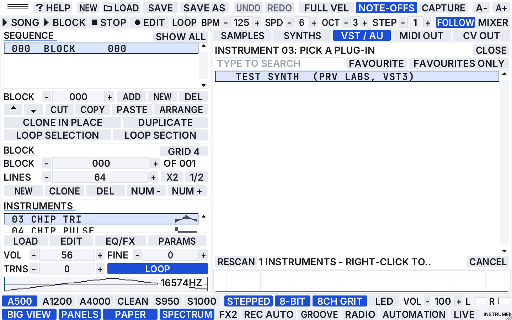

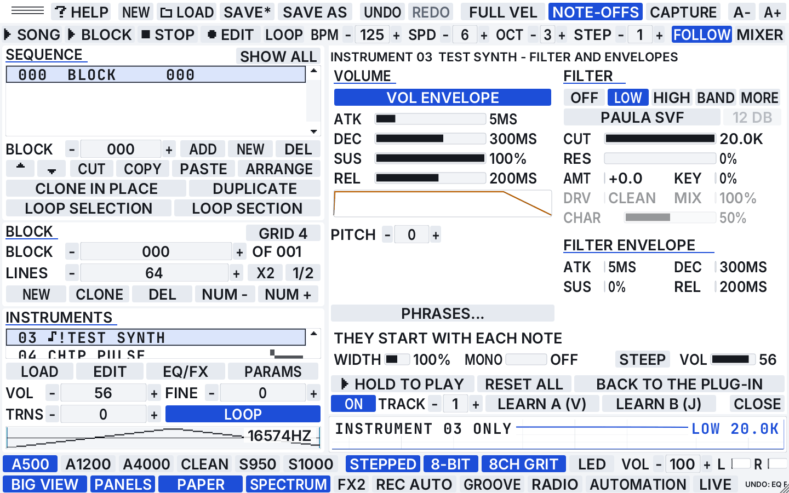
- EDIT opens the plug-in's own window. The laptop keys keep playing it while that window is in front.
- FILTER AND ENVELOPES... opens the PARAMS page for the plug-in: the same VOL ENVELOPE, FILTER and FILTER ENVELOPE as a sample, on the plug-in's sound. They start with each note played on it (from where they are, no click) and release when its last note ends — a slow fade-in for a pad, a pluck from any synth. BACK TO THE PLUG-IN returns; the button is lit, with what's on written next to it.
- EQ and FX on its bottom rows: its own EQ and effects (see Instrument EQ and effects).
- OUTPUT picks the mixer strip it plays into; AUTO is the track that played its latest note (the same in the song, a render and a bounce). BEND should match the plug-in's own pitch bend range, so slides and vibrato land in tune.
- Notes play one at a time per track.
Cxxis velocity, pitch commands become pitch bend,Oxxis the mod wheel, andECxEDxNxxKxxMxxE9xRxywork. Sample-only commands are ignored. - Chords:
#xyon a note's line plays chord slotxyfrom the song's chord table, held. See Chords. - Letting go of a key while recording writes a note-off (see Recording and note-offs).
- LEARN next to
LQHW, then move a knob in the plug-in's window: those commands then move that knob on this instrument's notes.
Presets for the built-in synths
Every built-in synth's page has PRESETS... next to CLOSE: the synth's own (RAVE's nine and five layered ones; ten each for SUB, REESE, MORPH, ACID, PAD and GRANULAR; fourteen for TG 101; for ROM, DEFAULTS) and yours. SAVE THESE SETTINGS AS MY PRESET... keeps the settings under a name on this computer, for that synth in any song; they're listed as MY ..., and DELETE ONE OF MY PRESETS... removes one. Picking one is one undo step. To keep a whole instrument — the synth with its EQ, effects and knobs — use SAVE INSTRUMENT... (see Saving & files).
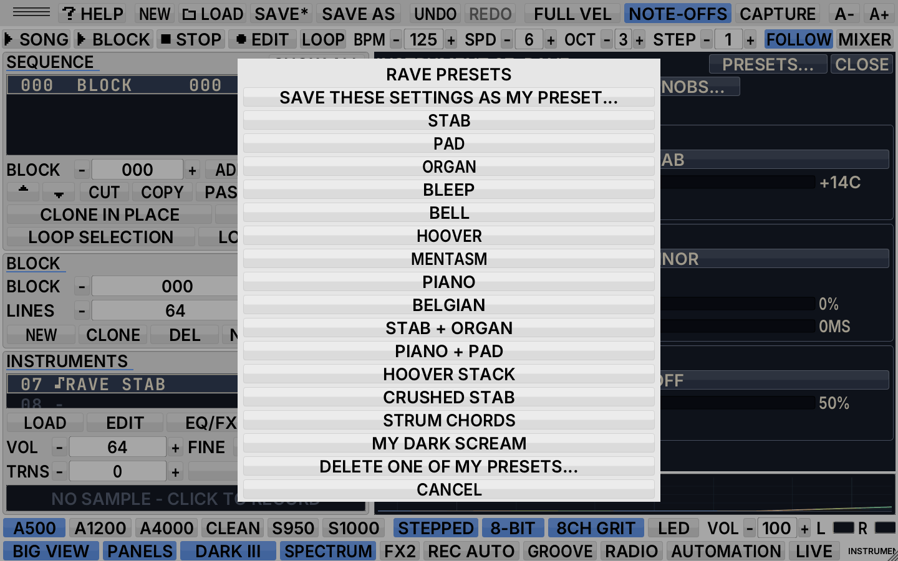
The built-in SUB synth
SUB is a sub bass synth built into Paula's Revenge. Pick an instrument, press LOAD → BUILT-IN SYNTH and pick SUB. Its page opens; EDIT opens it again later. Three tabs: SOUND, SHAPE and LFO + AMP; PRESETS... has ten, from CLEAN SUB and 808 KNOCK to SMALL SPEAKERS. An older song's SUB sounds as it did.

It never clicks when notes overlap or follow each other. Most mono synths click there because they restart the oscillator or drop the envelope to zero. SUB never restarts its oscillator (a new note only moves its pitch), its envelope carries on from where it is, and anything that has to start afresh starts where the wave crosses zero or fades in.
- MODE: LEGATO — one note at a time; a note played while another is held slides to it without a new attack. ALWAYS — always slides. OFF — every note gets a new attack (still no click). POLY — up to 8 notes. GLIDE sets how long a slide takes.
- OSCILLATOR: SHAPE from a pure sine to a rounder, brighter wave; OCTAVE and FINE. OSC 2 + HARMONICS: a second sine (an octave up, a fifth up, both, or an octave down); HARM 2 and HARM 3 — the sub heard on small speakers, still click-free.
- 808 DROP + CLICK (SHAPE): each note starts DROP semitones higher and falls to its pitch over DROP TIME, on ATTACKS or EVERY NOTE (808 slides); a CLICK at CLICK HZ on each attack; NOISE, a short burst (NOISE DEC).
- FILTER (SHAPE): TONE with RES, its own envelope (ENV AMT ±, ENV DECAY) and KEY TRACK — all at 0, the plain TONE of before.
- DRIVE (SHAPE): TAPE, TUBE, FOLD, CLIP or BITS; HIGH-PASS takes the rumble off (OFF to 80 Hz).
- LFO (LFO + AMP): RATE, DEPTH, TARGET (PITCH, LEVEL, FILTER), SYNC to the song (1 BAR to 1/16), SHAPE. ENVELOPE and OUTPUT (VELOCITY: how much
Cxxchanges the level; LEVEL). - BEAT (in the OSCILLATOR box) makes one note sound like two held together, so the sub swells and dips. BEAT ST plays the whole sound again BEAT ST semitones up (+1 to start), at the same level — exactly like holding the second key too, so the wobble follows the note as two keys' would. BEAT HZ adds a copy BEAT RATE Hz higher instead: the same wobble speed on every note. BEAT AMT sets how strong the second one is. BEAT WAIT is a delay before the beat comes in (0–4 seconds): each note starts as a plain, steady sub and the wobble swells in after that long — again from each new attack. Only the controls for the BEAT chosen are shown; switching never clicks, even mid-note; right-click the BEAT buttons to put them on a knob. (Older songs keep their BEAT as BEAT HZ.)
- Right-click any control to make it a knob (
LQHW) or the track's AUTO A / B, so the pattern can move it. Hold HOLD TO PLAY or play the keys to hear it. OUTPUT & KNOBS... opens the plug-in instrument page above — OUTPUT, BEND, ON, FILTER AND ENVELOPES, EQ / FX and chords all work for SUB.
The built-in REESE synth
REESE is the reese and hoover bass: detuned saws drifting against each other so the phasing never sits still, or the hoover's hollow pulse-saws swooping up into each note. It's click-free like SUB, so it pairs with SUB for a mid bass over a clean sub. LOAD → BUILT-IN SYNTH → REESE. Five tabs: OSC, MOVEMENT, FILTER, FX and AMP; PRESETS... has ten, from CLASSIC REESE to NEURO GROWL and SUB REESE. An older song's REESE sounds as it did.

- OSC: MODE and GLIDE as on SUB (POLY plays up to 6 notes). TYPE REESE or HOOVER; VOICES (1–7), DETUNE, SPREAD, OCTAVE; WAVE (SAW, SQUARE, SAW+SQ, TRI); SPREAD BY — EVEN, OUTSIDE (a thick middle, a wide shimmer) or RANDOM (the beating never repeats); STACK every other oscillator +OCT, -OCT or +5TH; NOISE. The SUB: level, -1 / -2 OCT, AUTO, SINE, TRI or SQUARE (a sine or triangle comes after the filter, steady under the moving saws).
- MOVEMENT: MOVE and MOVE RATE breathe the detune; DRIFT lets each oscillator wander. HOOVER's BEND, BEND TIME, PWM and PWM RATE. WOBBLE: RATE and amount, SHAPE (SINE, TRI, SAW, RAMP, SQUARE, S&H), SYNC to the song's tempo (1 BAR to 1/16, and triplets), TARGET (CUTOFF, PITCH, LEVEL, DETUNE, PHASER, FLANGER) and RESTART on EACH NOTE.
- FILTER: LOW 24, LOW 12, BAND, HIGH or NOTCH; CUTOFF, RES, KEY TRACK, and DRIVE into it; its envelope's AMT, ATTACK and DECAY.
- FX: DRIVE with its TYPE — WARM, HARD, FOLD (the metallic neuro edge), RECTIFY, CRUSH — and SQUASH; a PHASER and a FLANGER (each MIX, RATE, DEPTH, FEEDBACK — the flanger's below 0 is the hollow one); CHORUS, WIDTH, and MONO BASS: below it both sides are the same, so a wide reese keeps a solid centred low end.
- AMP: ENVELOPE and OUTPUT. Right-click, HOLD TO PLAY, OUTPUT & KNOBS..., saving and undo work as on SUB.

The built-in RAVE synth
RAVE is the jungle and hardcore keys: the sounds over the breaks rather than under them. LOAD → BUILT-IN SYNTH → RAVE, then pick a sound — every control is set for it, and you can change any of them after (including TYPE). Three tabs: SOUND, SHAPE, FX; PRESETS... adds five layered sounds: STAB + ORGAN, PIANO + PAD, HOOVER STACK, CRUSHED STAB, STRUM CHORDS.
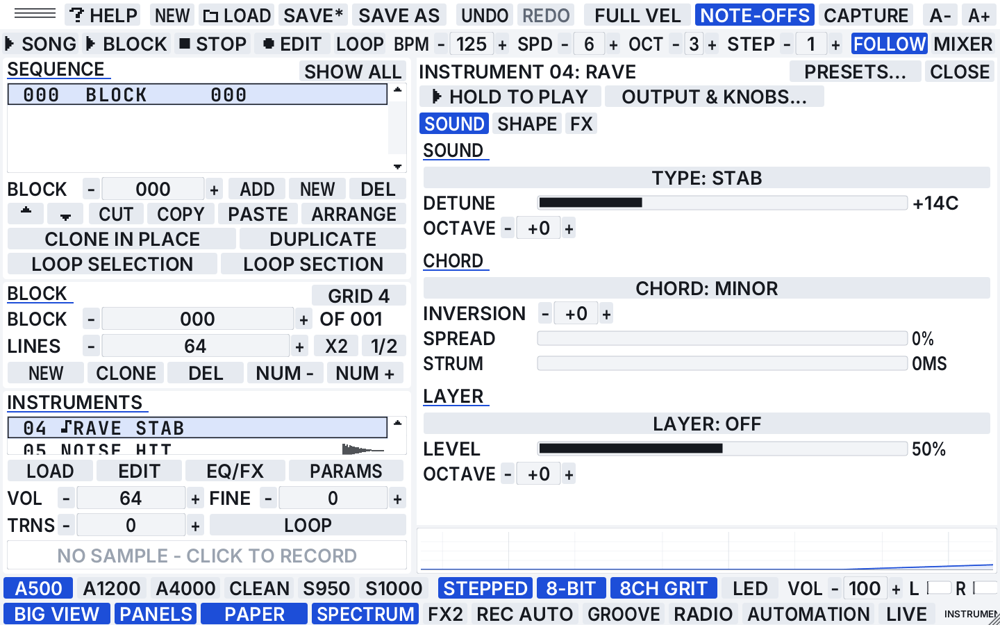
- STAB — the rave chord stab: three detuned saws over a square an octave down, the filter snapping shut. CHORD starts on MINOR, so one key plays the whole chord.
- PAD — five wide saws drifting against each other, slow in and slow out: the rolling, atmospheric side of jungle.
- ORGAN — drawbar organ with a click at the front, for house and hardcore organ stabs and basslines.
- BLEEP — a sine with a touch of its third harmonic and an echo: bleep-and-bass tones.
- BELL — FM electric piano and bell, bright on the attack and mellowing as it rings: the soulful, Rhodes-y side.
- HOOVER — the hoover stab: three chorused pulse-saws swooping up into each note, a square under them.
- MENTASM — the scream: pulse-saws an octave apart falling into each note, the pulse width racing.
- PIANO — the rave and house piano stab: two strings a note, the brightness dying away as it rings, a thump of the hammer.
- BELGIAN — the Belgian techno stab: a saw and a square an octave up, driven hard, with CHORD on 5TH.
- SOUND: TYPE, DETUNE, OCTAVE. LAYER: a second of the nine sounds under every note, with its LEVEL and OCTAVE. CHORD (OFF, MINOR, MAJOR, MIN 7, MAJ 7, 5TH, SUS 4, OCT) — one key plays the chord, the old rave chord-memory trick — with INVERSION, SPREAD across the stereo and STRUM.
- SHAPE: the FILTER (LOW, BAND, HIGH; CUTOFF, RES, ENV AMT, ENV DECAY, KEY TRACK); ENVELOPE; PITCH — PITCH ENV ± and PITCH TIME (a zap or a swoop), GLIDE, and VIBRATO with a DELAY.
- FX: DRIVE and CRUSH (an old sampler's bits and rate); CHORUS, the ping-pong ECHO with ECHO TIME and FEEDBACK (AUTO as before), WIDTH; VELOCITY and LEVEL.
- Up to 16 notes at once; when it's full the oldest fades out in a few milliseconds instead of cutting off. Right-click, HOLD TO PLAY, OUTPUT & KNOBS..., saving and undo work as on SUB.
The built-in ROM synth
ROM is a ROMpler in the spirit of the JV-1080 and M1: small looped samples spread across the keys, layered up to four deep, from your own samples. LOAD → BUILT-IN SYNTH → ROM; its page has three tabs — TONES, SOUND + FILTER and MORPH — with ROM FOLDER... at the right of them: point it once at the folder your WAVs are in (sub-folders too), and LOOK THROUGH IT AGAIN after you add some.

- Each tone's box says what's in it (
TONE 1: WND ACORD (3)), and has two buttons along its top: ROM... and SAMPLE.... - ROM... opens the ROM browser: every category in your ROM folder on the left, every sound in the one picked on the right, both scrolling, however many there are. Click a sound and play the keys to hear it; ↑ ↓ step to the next sound (loaded as you go, so keep playing), ← → the next category. KEEP (or Enter, or a double-click) keeps it; CANCEL (or Esc) puts back what was there; EMPTY TONE clears it. The whole browse is one undo. Roland-style names (
WND_XACORD0A.wav) are grouped by their sound; other libraries by the name without its numbers or notes. - SAMPLE... picks one sound's WAV files yourself, from anywhere.
- Each WAV's own root note and loop are used: a sample plays the keys nearest its root, its loop plays as long as the note, and one without a loop plays once.
- Each tone has LEVEL, PAN, TUNE (+12: an octave up) and FINE; every tone with samples plays on every note.
- SOUND: CHORD, OCTAVE, VIBRATO, VIB RATE. FILTER: CUTOFF, RES, ENV AMT, ENV DECAY. ENVELOPE, SPACE (chorus, echo) and OUTPUT as on RAVE.
- MORPH tab: the MORPH FILTER on every note instead of the low-pass — FILTER: LOW-PASS / MORPH picks which. MODEL (the 12 of the MORPH FILTER effect), MORPH, ENV>MORPH (±, by the filter envelope), LFO>MORPH and LFO RATE, VEL>MORPH, FREQ, KEY TRACK, EMPHASIS: a choir that opens from “OO” to “AH”, strings with sliding phaser notches.
- The samples are stored in the song (and in a saved instrument), so anyone you send it to has them. PRESETS keep ROM's settings, not its samples.
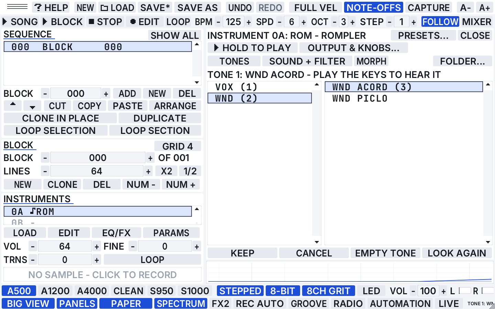

Loading an ordinary WAV also uses its own loop points, and for a looped sample its root note, so C-3 plays a C.
The built-in MORPH synth
MORPH is a synth built round the MORPH FILTER, in the spirit of E-mu's Morpheus: every note has its own morphing filter, moved by its own envelope, an LFO and how hard it's played — a pad opening from “OO” to “AH”, a bass that talks. LOAD → BUILT-IN SYNTH → MORPH; PRESETS... has ten sounds to start from, from VOWEL PAD and TALKING BASS to DOUBLE VOWEL, SYNCED SWEEP, RANDOM CHOIR and ZAP BASS. Three tabs: OSC, MORPH and AMP + FX. (A MORPH from an older song sounds as it did.)
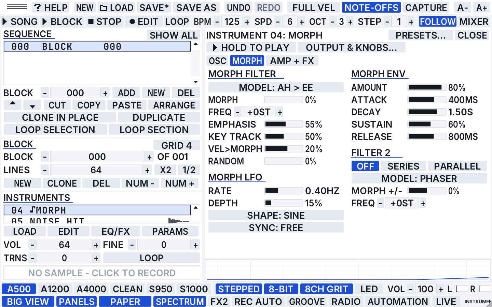
- OSC — OSCILLATORS: WAVE 1 and 2 (SAW, PULSE, SQUARE, TRI, SINE, NOISE, SUPERSAW, ORGAN), OSC 2's level, DETUNE, OSC2 TUNE, PW, SUB (a sine an octave down), NOISE (breath into the filter), DRIVE (into the filter). SOUND: CHORD, OCTAVE. PITCH: GLIDE, PITCH ENV ± and PITCH TIME (a zap or a swoop).
- MORPH — MORPH FILTER: MODEL (the effect's 12), MORPH, FREQ, EMPHASIS, KEY TRACK, VEL>MORPH, RANDOM (each note a random amount along or back: a choir where no two notes say the same vowel). FILTER 2: ROUTE OFF / SERIES / PARALLEL, its own MODEL, MORPH +/- (against the first; both follow the envelope and LFO) and FREQ — two vowels at once. MORPH ENV: AMOUNT ± and its ADSR. MORPH LFO: RATE, DEPTH, SHAPE (SINE, TRI, SQUARE, SAW, S&H) and SYNC to the tempo (FREE, 1 BAR to 1/16).
- AMP + FX — the amp ENVELOPE; SPACE: CHORUS, ECHO, ECHO TIME, FEEDBACK (AUTO as before), WIDTH; VELOCITY and LEVEL. Up to 16 notes.
The built-in ACID synth (303 + Devil Fish)
ACID is a 303-style bass line synth with the Devil Fish mods — our own model of the sound. LOAD → BUILT-IN SYNTH → ACID. One note at a time: a saw or square into a resonant low-pass, with the envelope and ACCENT that make it squelch and SLIDE between notes. Two tabs: 303 and DEVIL FISH; PRESETS... has ten sounds. The voice runs at four times the song's rate, so a screaming filter or the drive can't fold harmonics back down as a whistle (SUB's and REESE's drives do the same).

- Accents: write
C40(or any volume at ACCENT FROM, C38, or louder) on a note's own line to accent it — brighter and harder; notes without one aren't. Either command column, and on a sliding note too. Played from the keyboard, how hard you play decides. - Slides: OVERLAP (KEYS) slides a note played while the last is held. TIED NOTES also slides, in the pattern, a note that runs straight into the next one with no OFF between, with no new envelope — a 303's slide step. Put an OFF where a note should play fresh. 3xx works too.
- 303: SAW / SQUARE, TUNE, FINE, SHAPE, SUB · CUTOFF, RESONANCE (to self-oscillation), ENV MOD · DECAY, ACCENT, ACCENT FROM · VELOCITY, LEVEL.
- DEVIL FISH: ACC DECAY (the accent's own decay), ATTACK (0.3 ms to 2 s: up to 30 ms the Devil Fish's soft attack, accents still snap in; longer, every note fades in), SWEEP (slow: a run of accents builds up), AMP DECAY (5.00S holds), RELEASE · TRACKING, FILTER FM, RES BASS · slide TIME (10 ms - 1 s) · the MUFFLER (OFF / SOFT / HARD) and DRIVE.
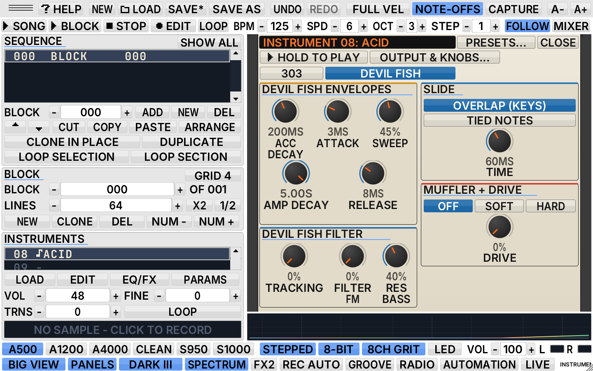
The built-in TG 101 synth (a classic monosynth)
TG 101 is a one-voice monosynth in the style of the SH-101 — our own model of the sound, built and tuned by ear, not a copy of any circuit or code. LOAD → BUILT-IN SYNTH → TG 101. One note at a time: a saw, a pulse and a sub-oscillator, mixed into a resonant 4-pole low-pass, one envelope, an LFO, portamento and an arpeggio. Like ACID it runs at four times the song's rate, so the filter can scream without whistling. Four tabs; PRESETS... has fourteen sounds.
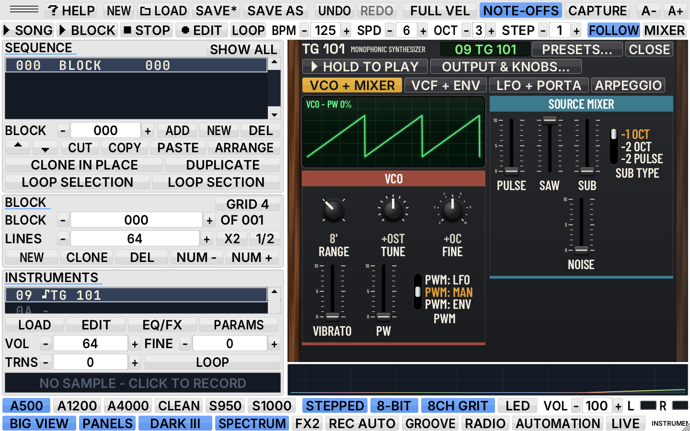
- VCO + MIXER — RANGE (16' 8' 4' 2': the octave), TUNE (±12 semitones), FINE, VIBRATO (the LFO on the pitch). PW and PWM: PWM: MAN sets the pulse's width by hand (0 = a square, up to a thin pulse); PWM: LFO and PWM: ENV move it, PW saying how far — the chorus-like PWM sound. The SOURCE MIXER: PULSE, SAW, SUB and NOISE; the sub is a square an octave down, two octaves down, or a narrow pulse two octaves down, locked to the VCO.
- VCF + ENV — FREQ, RES (at the top it whistles on its own: with KYBD 100 you can play the whistle), ENV, LFO (wobble), KYBD, BENDER. ATTACK, DECAY, SUSTAIN, RELEASE. GATE+TRIG starts the envelope on every note; GATE ONLY keeps it going through legato notes; LFO TRIG re-fires it every LFO cycle while a note is held — one long note becomes a pulsing rhythm. VCA: GATE is plain on / off: the organ sound.
- LFO + PORTA — LFO RATE, TRI / SQUARE / RANDOM / NOISE (RANDOM is the stepped sample-and-hold bleep), SYNC to the song (1 BAR down to 1/16). GLIDE OFF / ON / AUTO (AUTO glides only into a note played while the last is still held) and TIME. VELOCITY, DRIVE, LEVEL.
- ARPEGGIO — UP, DOWN or UP+DOWN over the notes held, STEP 1/4 to 1/32 (triplets too) at the song's tempo, 1-3 OCTAVES, GATE, HOLD ON (it keeps going with the keys up until the song stops). Give it a chord with the chord command (
#) or notes for the same instrument on two or three tracks.
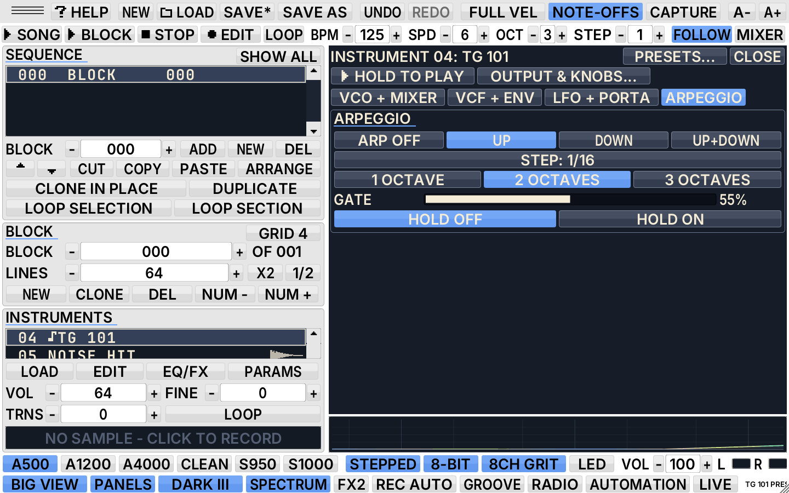
Presets: TG BASS, RUBBER SUB BASS, RAVE STAB, ACID 101, BLEEP, PWM LEAD, SQUELCH LEAD, SQUARE WOBBLE (the LFO synced to 1/8s), ZAP TOM (just the filter whistling), NOISE SNARE, ARP RAVE, ORGAN GATE, RES SWEEP and MINI HOOVER.
Try: SQUARE WOBBLE on a rolling bass line — the wobble locks to the tempo. ZAP TOM on C-2, G-2, C-3 for tuned zaps between the breaks. ARP RAVE with # (a minor chord) held for a bar, and LFO TRIG on any pad sound for an instant gated stab.
LAYER: one instrument playing another track's notes
Right-click an instrument → LAYER: PLAY ANOTHER TRACK'S NOTES..., pick the track to follow, then the track to play on (an empty one, or a new one). The instrument then plays every note of that track — its OFFs, volume and timing too — on its own track and mixer strip, with no notes of its own in the pattern. A SUB under a bassline: layer SUB on a spare track, set its TRNS to −12, and EQ or duck that track on its own. A note written on the layer's track plays instead. Right-click the instrument again for LAYER OFF.
The built-in 808 and 909 drum machines
808 and 909 are the two classic drum machines, built in and synthesised the way the originals make their sounds (no samples). LOAD → BUILT-IN SYNTH → 808 or 909. One key per drum, the same in every octave, so on the laptop keys Z is the kick, X the snare, V the closed hat and B the open hat.
| KEY | 808 | 909 |
|---|---|---|
C | KICK: the long, deep boom | KICK: punchy, swept down from high |
C# / D / D# | RIM SHOT / SNARE / CLAP | RIM SHOT / SNARE / CLAP |
E / F# / G# | LOW / MID / HI TOM | LOW / MID / HI TOM |
F / G | CLOSED HAT / OPEN HAT | CLOSED HAT / OPEN HAT |
A / A# / B | CYMBAL / COWBELL / CLAVE | CRASH / RIDE / KICK again |
- Every drum has LEVEL, TUNE, DECAY, TONE and PAN. TONE is that drum's tone knob: the kick's edge (the 909's ATTACK click), the snare's SNAPPY, the toms' NOISE, the hats' brightness.
- Tabs: KICK + SNARE, TOMS + MORE, HATS + CYMBALS and OUTPUT (LEVEL, DRIVE, and ACCENT: how much
Cxxor how hard you play changes each hit). A closed hat cuts off an open one. - PRESETS...: CLASSIC, LONG BOOM, TIGHT and DIRTY (808); CLASSIC, HARD, DEEP and SHORT (909).
The built-in PAD synth: four layers
PAD plays four layers on every note, each a whole sound of its own. LOAD → BUILT-IN SYNTH → PAD. Up to 12 notes at once; eight tabs: LAYER A–D, MIX, MOD, SPACE and SAMPLES. PRESETS... has ten pads.
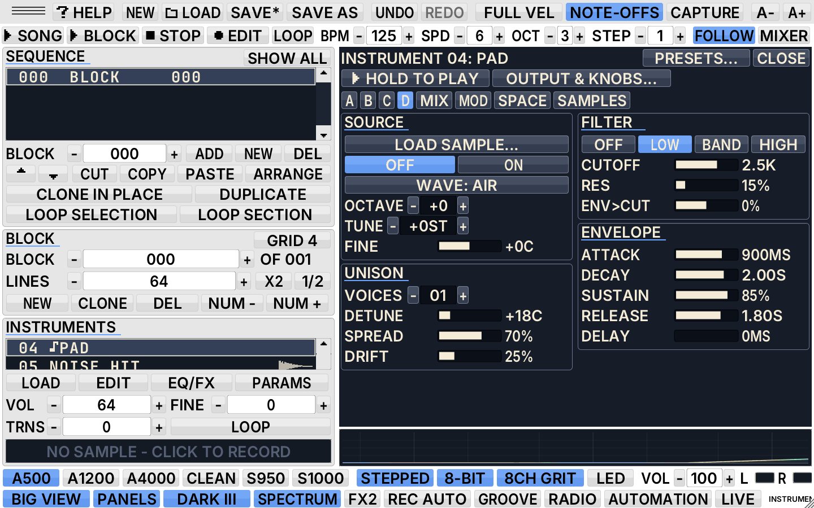
- Each layer: WAVE — SAW, SQUARE, PWM, TRI, SINE, ORGAN, VOX (a sung “ah”), GLASS (an FM bell), NOISE, AIR (tuned breath), SAMPLE (one of your own) — with OCTAVE, TUNE and FINE; up to 7 unison VOICES with DETUNE, stereo SPREAD and analog DRIFT; its own FILTER (LOW, BAND, HIGH) moved by its own ENVELOPE; and a start DELAY, so one layer can swell in after another.
- MIX: every layer's LEVEL and PAN side by side, its KEY LOW / KEY HIGH (two layers meeting at a key split the keyboard) and ALL / SOFT / HARD — velocity layers: playing harder changes the sound.
- MOD: the MAIN FILTER (LOW 12, LOW 24, BAND, HIGH) with its own envelope, key tracking and velocity; two LFOs, each to CUTOFF, PITCH, LEVEL, PAN, A<>B or C<>D (a slow fade between two layers) or WIDTH.
- SPACE: CHORUS, a ping-pong ECHO, a REVERB with SIZE and TONE; GLIDE, VEL SENS, WIDTH and LEVEL.
- SAMPLES: any layer can play a sample — a choir, strings, a vocal, a texture from a record — with everything a layer has (unison, filter, envelope, key split, velocity layer). LOAD SAMPLE... (at the top of each layer's SOURCE box, and on SAMPLES) opens the sample browser as for any instrument: click a sample to hear it, then LOAD INTO or double-click. The layer's WAVE becomes SAMPLE; the instrument stays PAD and keeps the sample. If another layer already plays the PAD's own sample, the new one goes into the next free instrument, so both keep their sound.
- On SAMPLES, for each layer playing one: SAMPLE (OWN, or any instrument's number), ROOT (the key that plays it at its own pitch, C-3), START, LOOP — AUTO (its own loop if it has one, else the whole), WHOLE or ONE SHOT — and XFADE, a crossfade over the loop's join so any sample loops without a click.

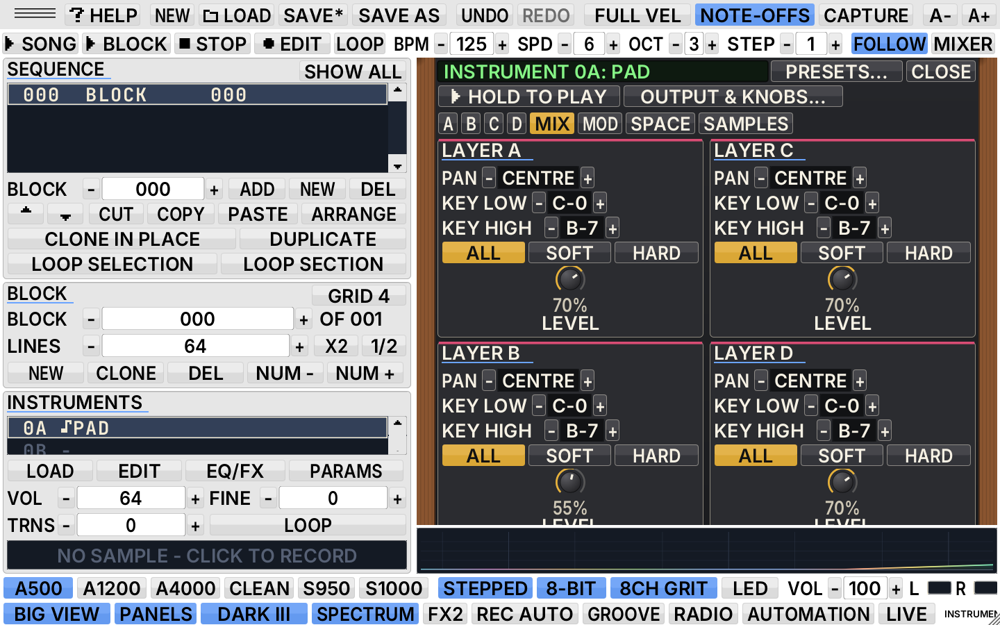
The built-in GRANULAR synth
GRANULAR plays a sound as a cloud of tiny overlapping pieces — grains — so it can hold one moment of a sound for ever, smear it into a pad, stretch it or scatter it into glitter. LOAD → BUILT-IN SYNTH → GRANULAR. Notes play it at their pitch (C-3 = the sound's own pitch), up to 6 at once.

- SOURCE: TABLE — 8 built-in sounds that change from start to end (SINE, SAW, SQUARE, VOCAL through A E I O U, BELL, GLASS, NOISE, CHOIR). SAMPLE — press LOAD SAMPLE... under the SOURCE box and pick a sample in the browser, just as for any instrument: it goes into GRANULAR (which stays GRANULAR) and is saved with the song. Or set SAMPLE to another instrument's number to use its sample. RECORDING — the audio input, live: the last 8 seconds of what comes in.
- Across the top, beside the SOURCE box, is the sound itself, with a line at POSITION and a thin line where the grains are reading. Click or drag on it to set POSITION. Three tabs under it show the rest: GRAINS, LFOS + FILTER (MOD in a narrow window) and AMP + FX. PRESETS... has ten: DEFAULTS, CHOIR CLOUD, GLASS SHIMMER, FROZEN VOCAL, STUTTER SYNC, SCALE SPARKLE, REVERSE SWELLS, TEXTURE DRONE, PERC SCATTER and KEY SCAN (settings only, not a sample). A GRANULAR from an older song sounds as it did.
- GRAINS: POSITION; SCAN (moves the position on as the note plays — 100% plays through at the sound's own speed, less stretches it, minus goes backwards); SIZE; DENSITY (grains a second); SPRAY (scatters where and when grains start); FREEZE (holds the position — and on RECORDING stops taking in sound, so you can play what was caught); WINDOW — each grain's shape: SMOOTH, TRIANGLE, FLAT, PERC (sharp and dying — stuttery) or SWELL (backwards-sounding); KEY>POS — higher notes read further along the sound (or back, below 0).
- PITCH: PITCH, SPREAD (each grain randomly out of tune), REVERSE (how many play backwards), STEREO (how wide they spread); SCALE — SPREAD's random pitches snap to OCTAVES, FIFTHS, MAJOR, MINOR or PENTA (or anywhere: FREE), a cloud in key; DETUNE (cents); SHIMMER (grains an octave up).
- LFO 1 and LFO 2 with RATE, AMT, TO, SHAPE (SINE, TRI, SQUARE, SAW, S&H) and SYNC to the tempo (a synced square on POSITION stutters in time); ENV MOD — each can move POSITION, SIZE, DENSITY, SPRAY, PITCH, STEREO, CUTOFF or LEVEL.
- FILTER: CUTOFF and RES (a resonant low-pass), DIFFUSE (smears the grains into a wash).
- AMP + FX — ENVELOPE (ADSR); SPACE: ECHO (ping-pong), ECHO TIME, FEEDBACK, WIDTH; OUTPUT: LEVEL.
- On a TABLE, a note's grains line up with each other, so with SPRAY and SPREAD at 0 it is a clean tone; turn them up to break it apart. Right-click, HOLD TO PLAY, OUTPUT & KNOBS..., saving and undo work as on SUB.
Automation
Every track has two automation knobs, AUTO A (Vxx) and AUTO B (Jxx). Point one at any effect control and the pattern moves it.
- Open an insert's effect page in the mixer. Pick the track in the TRACK box.
- Press LEARN AUTO A (V), then move the control: drag a built-in effect's slider, or turn a knob in the plug-in's window.
- In the pattern,
V00is the control's lowest andVFFits highest. The value holds until the next one. - Put
Yxxbefore or beside theVto glide there over xx ticks instead of jumping.
- On and off: press LEARN, then click the effect's BYPASS (or an instrument's ON) instead.
V00then switches it off andV01–VFFon. - The channel page lists what each knob controls under AUTOMATION KNOBS, with CLEAR buttons. The help strip and the command list name it too.
Recording by hand: REC AUTO
Switch on REC AUTO on the bottom row, turn EDIT on and play. Moving a learned control writes its command on the line that's playing: V or J, or L Q H W for an instrument's own knobs on the track playing it.
- It goes in the first effect column if that's free, otherwise in FX2. It never overwrites other commands; that line is skipped and the status line says so.
- One value per line per knob, and only when it changes. What the pattern plays back isn't recorded again.
- A whole pass, until you stop, is one undo step.
Envelopes: drawing automation
AUTOMATION on the bottom row opens the envelope panel under the pattern, where the spectrum was. Drag its top edge to resize it. It shows the block and track you're on.
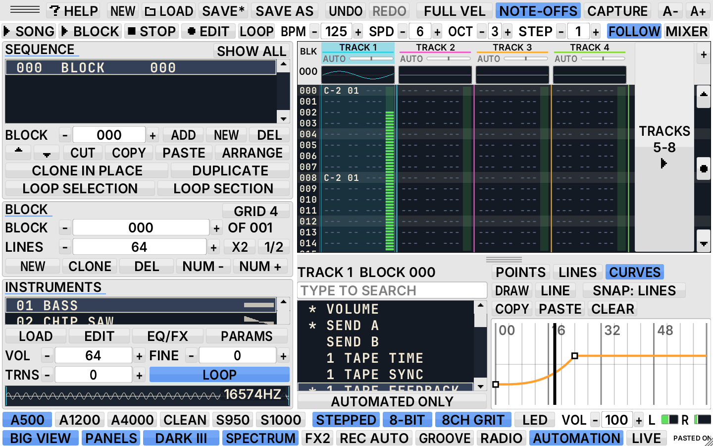
| DO | WHAT HAPPENS |
|---|---|
| Pick a control (left) | VOLUME, SENDS, the track's inserts, the send buses' and master's inserts, the instrument's own inserts, every control of a built-in synth (I04 CUTOFF, PAD's I04 A LEVEL) and all of a plug-in's parameters, MACROs. * = has an envelope here. Type to search; AUTOMATED ONLY. |
| Move a control | Turn a built-in synth's control, a mixer effect's slider, a track's FADER or SEND and the list picks it, ready to draw. |
| Right-click a control → AUTOMATE | On a built-in synth's control, a mixer effect's slider, a track's FADER or SEND: the panel opens with that control picked, ready to draw. When the block stops, the control goes back to its own setting. |
| Double-click | Adds a point (snapped); on a point, removes it. Delete removes the selected one. |
| Drag a point | Moves it, with a readout of the line and the real value. Shift leaves the snap. |
| POINTS / LINES / CURVES | Steps, straight lines, or bends: drag a line up or down to bend it. |
| DRAW / LINE | Paint a point on every line as you drag / drag a straight ramp. |
| SNAP, COPY, PASTE, CLEAR | Lines, beats or off; copy an envelope to another control or block; remove it. |
- Envelopes belong to their block, and DOUBLE / HALVE take them along. When the block stops the control goes back to its own setting.
- Saved in the song (v0.37 or later), undoable, and in renders.
Modulation
MODULATION on the mixer's strips page opens 16 modulators. Each has a SOURCE and up to 8 TARGETS — any built-in effect control, a plug-in's parameter, or a track's VOLUME, SEND A or SEND B — each with its own AMOUNT (−100% to +100%).

| SOURCE | WHAT MOVES IT |
|---|---|
| LFO | SINE, TRIANGLE, SAW UP / DOWN, SQUARE or RANDOM S&H; RATE in Hz or SYNC'd from 1/32 to 4 BARS (locked to the song position); RETRIG on each note; PHASE. |
| FOLLOWER | A track's level (ATTACK, RELEASE, GAIN). Aim it at another track's VOLUME for sidechain ducking (it starts at −100%). |
| STEPPER | 16 steps you draw with the mouse, at a RATE in time with the song, with GLIDE. |
| RANDOM | A new value each RATE, stepped or SMOOTH. |
| KEY / VELOCITY | How high / how loud the notes are, from a track or ANY TRACK (your playing too). |
| MACRO | One knob for many controls, each its own amount. AUTO A (V) / AUTO B (J) hand it to a track's automation knob. |
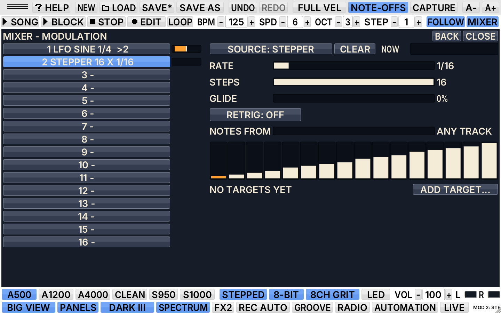

- Targets: ADD TARGET... lists the tracks' VOLUME and SENDS and every effect in the song. Or press MODULATE on an effect page and move a control: the selected modulator gets it. Click a target for TURN IT THE OTHER WAY, GO TO THE EFFECT or REMOVE.
- A modulated slider shows an orange band for its range and a line where it is now. Your setting stays put; modulation moves the sound around it.
- Saved in the song (v0.36 or later) and undoable. VOLUME and SENDS glide; switches flip past the middle.
MIDI out
An instrument can play your hardware (an MPC, a microKORG, an NTS-1) over MIDI. Press LOAD and the MIDI OUT tab (or right-click the instrument → MIDI OUT TO HARDWARE...), then double-click a MIDI output. (For a modular, see CV out.)

| CONTROL | WHAT IT DOES |
|---|---|
| CHANNEL | MIDI channel 1–16 |
| BEND | The hardware's pitch bend range, so pitch commands land in tune |
| ON | As for plug-in instruments; #xy plays chords here too |
| DELAY | −50 to +200 ms to line the hardware up with the audio. Positive: the MIDI goes later. Negative: all the audio goes later instead. |
| SEND MIDI CLOCK | 24-a-beat clock with start, stop, continue and song position (4 lines = a beat), so the hardware follows the song |
| KNOB L Q H W | The CC each sends (74, 71, 73, 10 to start). LEARN CC takes the number from the next knob you turn on a controller; the SEND bar sends it now (and REC AUTO records it). |
| PANIC | All notes off on every MIDI output. STOP pressed while already stopped does the same. |
Notes, velocity, pitch bend, the mod wheel and the timing commands work as for plug-in instruments. If the device isn't connected, the instrument shows !NAME, sends nothing and keeps its settings; CHANGE DEVICE... and the same device again reconnects it. MIDI-out instruments aren't in renders or bounces (they're hardware).
Gear: a synth's controls by name
GEAR says what synth is on the other end: MICROKORG 2, NTS-1 MKII, NTS-1 MKII + ROLLERS, DREADBOX ARTEMIS or ACCESS VIRUS TI (its PAGE A: set its MIDI CONTROL PAGE A to CONTROLLER DATA; on the Artemis switch CC IN on). The knobs then get that synth's usual four, and clicking a knob's name picks another control by part and name. Each is sent the way the synth wants it: CCs, the NTS-1's 14-bit pairs and TYPE switches, and Rollers' controls as NRPNs (switch on the NTS-1's MIDI RX SHORT MESSAGE, and MIDI NRPN for Rollers).

More GEAR: DREADBOX TYPHON (its firmware-3 CCs; MIDI CC: ENABLED), KORG M1 / M1R (Korg's parameter-change System Exclusive; pick SINGLE or DOUBLE to match the program, and put the M1 in EDIT PROGRAM) and ROLAND JV-1080 (Roland's DT1 to the patch being played: patch, effects, all four tones at once, or each tone). The Behringer TD-3's sound knobs are analog, with no MIDI control.

Every GEAR control can be automated: the AUTOMATION panel lists them all by name, and a lane on one sends it to the synth as the block plays (only when the value changes).
ALL CONTROLS... shows every control as a bar that sends as you move it. The numbers come from Korg's own documents. Units loaded into the microKORG 2 aren't in Korg's MIDI chart, so they're set on the synth.
Akai S1000 editor
GEAR: AKAI S1000, then S1000 EDITOR..., edits the sampler itself over System Exclusive. Connect both ways (the S1000's MIDI OUT to a MIDI input switched on in Settings) and set its exclusive channel to this instrument's CHANNEL minus one. GET PROGRAMS reads the program names; PROGRAM: picks one and reads its settings and every keygroup.

PROGRAM edits the program's settings (loudness, polyphony, range, tune, modulation, both LFOs, voices); KEYGROUP edits a keygroup (range, filter, both envelopes and their modifiers, and its four velocity zones). Each change goes to the S1000 at once, as a whole block (at most every 80 ms while you drag). Save on the S1000 as usual.
Akai S950 editor
GEAR: AKAI S950, then S950 EDITOR..., edits an S950 (or S900) the same way, in the S900's own protocol: its MIDI channel must match this instrument's CHANNEL. GET PROGRAMS reads its catalogue; picking a program reads it with all its keygroups.

Keygroups have their keys and velocity switch, amp envelope, velocity modulation, filter and its envelope, pitch warp, LFO, crossfade, and the soft and loud samples' tune, filter and loudness. The S950 only takes a program whole, so each change sends it all (at most every 150 ms), and that program becomes the selected one.
Samples over MIDI
Both editors have SEND A SAMPLE... and GET A SAMPLE..., to move sounds between the song and the sampler without re-sampling the audio.

- SEND A SAMPLE... lists the song's samples with how long each will take, and sends the one you pick as a new sample with its name, rate and loop. Stereo is mixed to mono; above 48 kHz it's brought down to 44.1 kHz. A name the sampler already has gets
-2on the end, so nothing is replaced. - GET A SAMPLE... lists the sampler's samples; the one you pick comes into the first free instrument (no sample, not a synth or MIDI out). Undo takes it out again.
- It's slow — that's MIDI: about 3,000 bytes a second, so a second of 44.1 kHz sound takes roughly 45 seconds to the S1000 and 30 to the S950. The info line counts it up, and STOP stops it.
- The S950 (and S900) uses Akai's pre-standard sample dump in 12 bits: the whole sample as one message, then its name and loop (its reception is switched on for you first). The S1000 takes the header, then standard MIDI sample dump packets in 16 bits, each waiting for its answer; a damaged one is sent again. If no answers come at all, it carries on at MIDI's pace.
- Connect both ways. The formats come from Akai's own documents and the MIDI Sample Dump Standard; this hasn't been tried on real hardware yet.
CV out (modular)
With a DC-coupled interface (an Expert Sleepers ES-9, or anything that can put out steady voltages) Paula's Revenge plays and clocks a Eurorack modular. Ordinary interfaces block DC, so CV won't work through them.
- Choose the interface in Audio/MIDI Settings…. With more than 2 outputs the app switches them all on (up to 16), in order: output 5 in the app is the interface's output 5. Outputs 1–2 are the music; CV goes on 3–16.
- Press LOAD and the CV OUT tab, or right-click the instrument → CV OUT TO A MODULAR....
- Patch the PITCH and GATE outputs to an oscillator and an envelope, and play.

| CONTROL | WHAT IT DOES |
|---|---|
| PITCH OUT | 1 V / octave, C-3 = 0 V |
| GATE OUT | High while a note plays, at the GATE level |
| VEL OUT | The note's velocity (or Cxx) as 0 V to the gate level |
| MOD OUT | The Lxx knob as a voltage |
| FULL SCALE | The volts the interface puts out at full level: 10 V for the ES-9 |
| OCTAVE BEND | Shift the pitch by octaves; the range pitch commands bend over |
| INPUT TUNER | INPUT is where the oscillator comes back in. TUNER holds C-3's voltage with the gate open and shows the pitch it hears: tune the oscillator to a C |
| AUTO-TUNE | Steps the pitch CV from −2.5 to +2.5 V, measures each step (about 10 seconds; leave the oscillator alone) and makes a map: every note is then sent at the voltage that plays it in tune, even on an oscillator that isn't exactly 1 V / octave. The map is saved with the instrument, and kept on this computer under the instrument's name (name it after the synth first); MAP... loads one of those, or CLEAR MAP goes back to plain 1 V / octave |
It's mono: the newest note wins, a released key goes back to one still held, and a new note while the gate is open closes it for 2 ms so envelopes start again. OFF closes the gate; slides, vibrato and pitch bends move the pitch CV. It plays in step with the song, sample by sample. RENDER WAV writes the voltages too: one 32-bit float WAV per output used (song CV OUT 3.wav…), the same length as the audio. It isn't in bounces.
CV sources
CV SOURCES... (on the CV OUT page) gives the song up to 8 voltages of its own, each on an output, saved in the song.
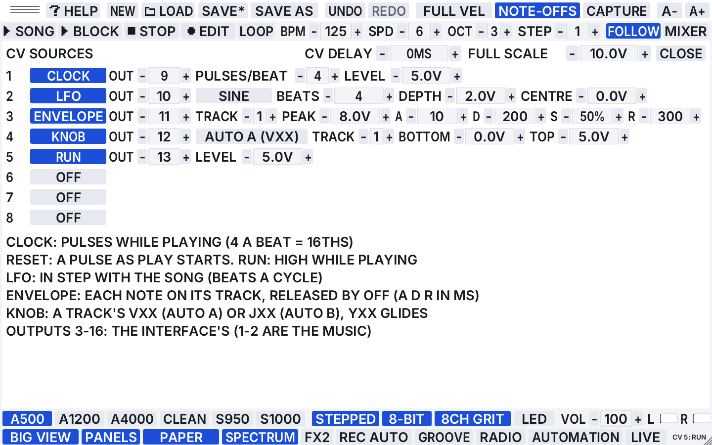
| SOURCE | WHAT IT SENDS |
|---|---|
| CLOCK | Pulses while playing: PULSES/BEAT 4 = 16ths, 24 = 24 ppqn |
| RESET RUN | A pulse as play starts; high while playing |
| LFO | Sine, triangle, saw, square or random, BEATS a cycle in step with the song, with DEPTH and CENTRE |
| ENVELOPE | Attack, decay, sustain, release (ms), started by each note on its TRACK and released by OFF, up to PEAK |
| KNOB | A track's Vxx (AUTO A) or Jxx (AUTO B) as a voltage between BOTTOM and TOP (Yxx glides it): automation for the modular |
CV DELAY (top of CV SOURCES, −100 to +100 ms) lines the modular up with the music: positive sends the voltages later; negative sends the music on 1–2 later, for a modular heard back through the inputs.
Safety. Voltages are clamped to the interface's range. STOP closes every gate and drops RUN; STOP twice (panic) also lets go of a tuner or AUTO-TUNE voltage.
Chords
A plug-in or MIDI-out instrument plays a whole chord from one note. Put #xy on the note's line and it plays chord slot xy from the song's chord table, held. The note you type is the chord's root: C-3 with #01 (slot 01, MIN) plays C, D#, G.
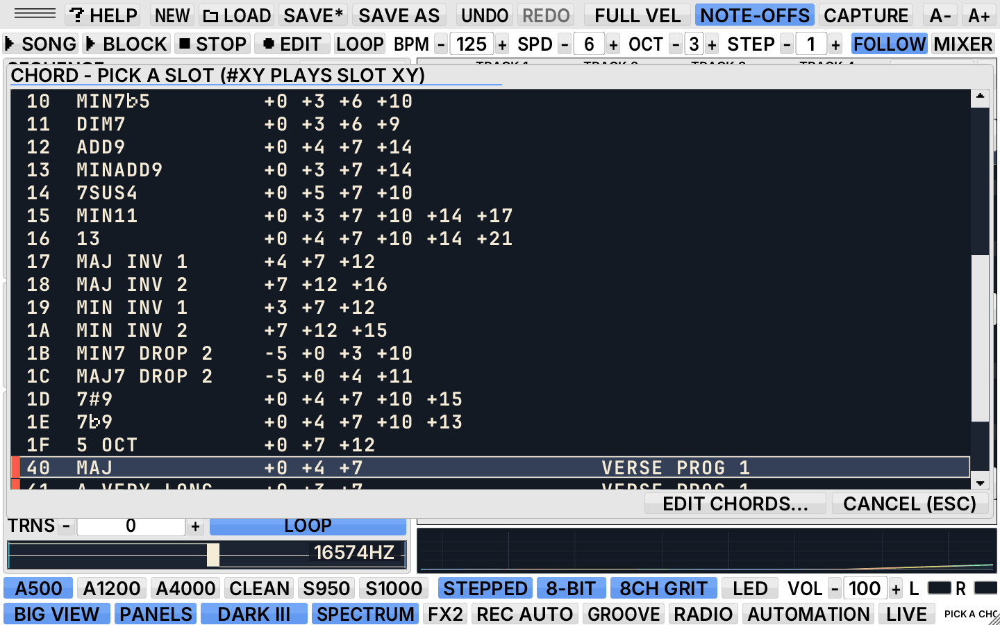
# cell: the chord list- Three ways in: type Shift3 (
#) in the command column, then the slot number; or right-click an effect cell and click # CHORD at the top of the list, then pick the chord; or right-click a cell that already has a#to change its chord. - In the chord list, click a chord, or use the arrows and Enter; typing a slot number jumps to it. EDIT CHORDS... opens the CHORDS page on that slot, EFFECT COMMANDS... the usual list. Cancelling leaves
#01. - A slot holds up to 8 notes, below the root as well as above it. An inversion doesn't put the root at the bottom:
C-3with MAJ INV 1 plays E, G and the C above. - The chord ends like a note: the next note on the track, note-off,
ECxorNxx. Pitch commands bend the whole chord. On a sample instrument#xyplays just the note, and saving a MOD leaves it out.
Playing chords in
With EDIT on, or for CAPTURE, just play the chord on a MIDI keyboard or the laptop keys. On a plug-in or MIDI-out instrument, notes pressed together (within 60 ms) that match a slot in the song's chord table go in as one note, the root, with #xy on one track. The status line says what it found, for example CHORD MIN7 (#03) ON A-2.

#02 (MAJ)- Inversions and spread voicings match their own slots (MAJ INV 1, MIN7 DROP 2…). If no slot has exactly the notes you played, a slot with the same note names in another octave is used, and the status line says the voicing may differ.
- When two slots have the same notes (C6 and Am7), the one whose root is your lowest note wins, then the one starting on the first key you pressed, then the lower slot.
- The notes go in as you play them; the moment they make a chord they're rewritten as one, still one undo step. In step entry the cursor moves on once for the chord. Its
OFFgoes on the line where you let go of the last key. #goes in the first effect column, or the second if the first already has a command. If both are taken, the notes go in one by one and the status line says so.- Notes rolled slower than 60 ms stay separate notes, and sample instruments always get the notes as played. Right-click EDIT → DETECT CHORDS turns it off; it's remembered.
The CHORDS page
Press Cmd3, or CHORDS... on the instrument's page. The slots 01–FF are on the left, the chord database on the right.

| CONTROL | WHAT IT DOES |
|---|---|
| Slot list | Fixed columns: #, NAME (a long one ends in ..) and NOTE, so the notes line up. Click a slot to fill it; drag, Shift-click or Cmd-click to pick several. Shift ↑↓ moves through the slots. A * marks a slot that isn't the same in the global set; a coloured stripe, its group colour. |
| Double-click NOTE | Type the slot's note right there (Enter keeps it, Esc doesn't) |
| RECORD CHORD | Stays on: play chord after chord into the slots (see below) |
| COLOUR | A group colour for the picked slots: 8 colours or none |
| AUDITION | Clicking a chord plays it, on the last key you played |
| Database | Double-click a chord (or press Enter, or SET SLOT) to put it in the slot. ↑↓ move through it. |
| ALL MAJOR MINOR DOM SUS DIM AUG OTHER | Show one family of chords |
| Typing | Searches: MIN7, SUS4, DROP 2, 7B9 for 7♭9. Backspace and Esc clear it. |
| PLAY | Plays the chord with the current instrument, on the last key you played (Space) |
| CLEAR SLOT | Empties the slot, or all the picked ones (Delete): their #xy then plays just the note |
| THIS SONG GLOBAL SET | Which table you're editing |
| SAVE AS GLOBAL SET | The song's chords become the global set (it asks first) |
| USE GLOBAL SET | The song gets the global set (undo takes it back) |
Recording your own chords
Click the slot to start at and press RECORD CHORD above the slot list: it stays down. Play chord after chord on a MIDI keyboard or the laptop keys, letting go between them. Each chord goes into the selected slot, then the selection moves on to the next empty slot, so nothing is written over; the status line counts them. Click RECORD CHORD again (or Esc) to stop.
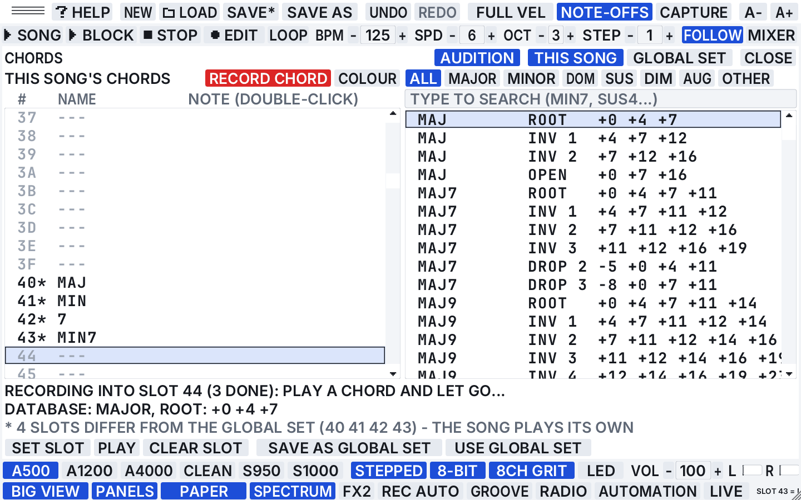
- If the notes are one of the database's chords, the slot takes that name and root: E G C becomes MAJ INV 1, so
C-3with it plays your E G C. Anything else is called USER and is measured from your lowest note. - Up to 8 notes (with more, the lowest 8). One note on its own isn't a chord and is ignored.
- While it records, the MIDI keyboard doesn't write into the pattern and the laptop keys don't type into the search. Each chord is an undo step.
Notes on slots
Double-click a slot's NOTE column (or right-click → NOTE...) and type a note of your own right there, such as VERSE PROG 1, up to 24 characters; Enter keeps it, Esc doesn't. It shows in the slot list's NOTE column, in the chord list over the pattern and in the help line for a #xy, and it stays with the slot when you change its chord. Notes are saved in the song and in the global set.
Colour groups
Pick several slots (drag down the list, Shift-click a range, Cmd-click one at a time), then COLOUR (or right-click → COLOUR...): red, orange, yellow, green, cyan, blue, purple, pink, or none. The colour shows as a stripe left of the slot number, in the chord list over the pattern, and on the #xy in the pattern itself, so a progression stands out while you write.

#40 red, #05 blueCOPY, PASTE and CLEAR work on all the picked slots. Colours are saved in the song and in the global set.
Hearing chords (AUDITION)
With AUDITION on (top right of the CHORDS page; on to start with), clicking a slot or a chord in the database plays it with the current instrument while you hold the mouse, on the last key you played (C of the octave before you've played any). The arrow keys play each chord briefly as you move. In the chord list over the pattern, moving with the arrow keys or the mouse plays each chord on that cell's note with that track's instrument; clicking still picks it.
The database
116 chord types — major, minor, dominant, suspended, diminished, augmented and more — from the tonal music library's list, which comes from Wikibooks' complete list of chord patterns. Each one is there as written (ROOT), in every inversion (INV 1, INV 2…), as DROP 2 and DROP 3 voicings for four-note chords and OPEN for triads: 638 voicings in all.
The song's chords and the global set
- Every song has its own table, saved in the song. The global set is kept on your Mac: every new song, and every MOD or older song without a table, starts with a copy of it.
- Changing a song's chords doesn't change the global set, and changing the global set doesn't change any song. A saved song always plays its own chords, whatever the global set has become.
- When you load a song, the status line says how its chords compare with the global set, for example
SLOTS 05 1F DIFFER FROM THE GLOBAL SET. It plays its own either way. - Older songs are converted when they load: v0.12–v0.14 chords (
0xyon a CHORD instrument) become#xy, and v0.11 chords (0xyas two intervals) each get a slot with the same notes. The song sounds the same.
Bouncing
Turn any part of the pattern into a new sample. Highlight some notes (they can cover several tracks), then right-click inside the highlight, or press CmdB.
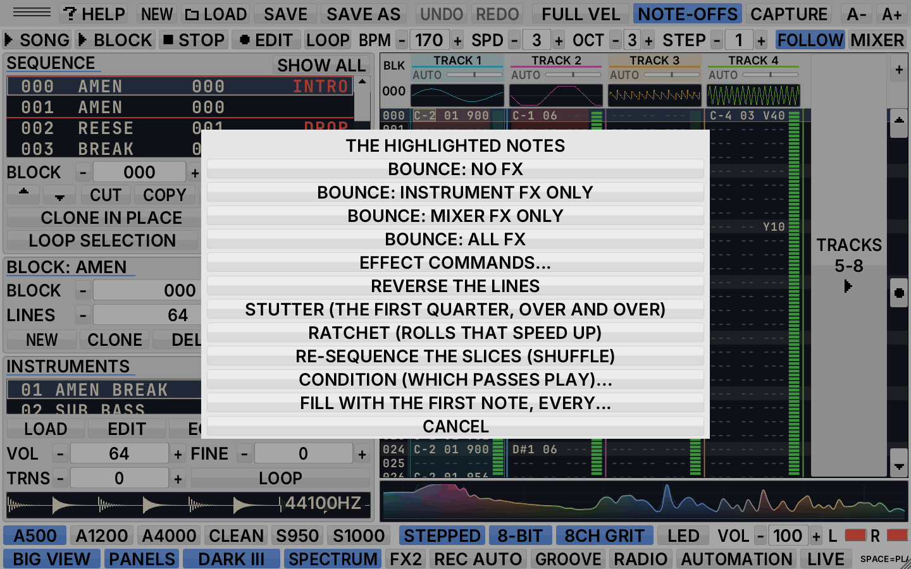
| CHOICE | WHAT'S IN THE SAMPLE |
|---|---|
| NO FX | The instruments' sound before any effects. Use it when the sample will play through the same effects. |
| INSTRUMENT FX ONLY | Through the instruments' own inserts, not the mixer. |
| MIXER FX ONLY | After the tracks' strips (EQ, inserts, fader) plus what they send to SEND A / B, so reverb and delay tails are in it; not the instruments' own effects. |
| ALL FX | Both. Never the master or the Paula / Akai output stage. The new instrument is called BOUNCE, BOUNCE+IFX, BOUNCE+MFX or BOUNCE+FX. |
- Only the highlighted lines of the highlighted tracks play, from the first line, at the tempo and speed set there. Plug-in instruments are included.
- It records on after the last line until the sound has died away (up to 10 seconds), so tails aren't cut.
- The sample goes into the first empty instrument slot, named like
BOUNCE T1-2 000-015, at 44.1 kHz.C-3plays it exactly as recorded. - Nothing else changes: your pattern and the instruments that played it stay as they are. Undo removes the new instrument.
And then? (resampling)
Straight after a bounce it asks what to do with the new sample. Each choice is one undo step; KEEP IT AS IT IS leaves it alone.
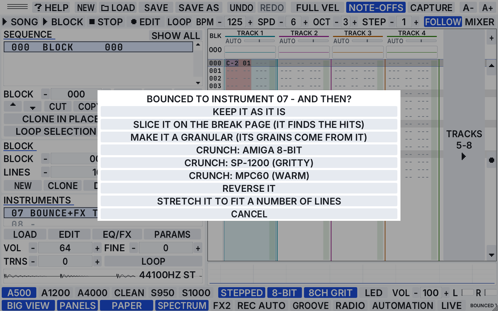
| SLICE IT ON THE BREAK PAGE | Opens the BREAK page with it chopped at its hits. |
| MAKE IT A GRANULAR | The instrument becomes a GRANULAR synth whose grains come from the bounce; the ENGINE page opens. |
| CRUNCH | Re-samples it through an old sampler's converter: AMIGA 8-BIT (16.7 kHz), SP-1200 (12-bit, 26 kHz, a little drive, gritty), MPC60 (12-bit, 40 kHz, warm). Pitch, timing, slices and loop stay where they were. |
| REVERSE IT | Backwards. |
| STRETCH IT TO FIT | Opens the sample editor's STRETCH, set to the nearest whole number of beats; change LINES, then PREVIEW and APPLY. |
Rendering
RENDER WAV (File menu) asks what to render:

- SONG: the song once through as a 24-bit stereo WAV, mixer and all.
- STEMS: a folder next to the name you pick,
<name> STEMS, with one 24-bit WAV per used track (after its strip), SEND A, SEND B and the master:01 TRACK 1.wav…11 MASTER.wav. They start together and are the same length, so they drop straight into Ableton. - After the song ends it keeps going until everything is quiet for a second (up to 20 seconds), so tails aren't cut. Plug-in delay is taken off the start.
- MIDI-out instruments can't be rendered; the status line says which were left out.
These are in the File menu. EXPORT SAMPLES writes every instrument's sample to a folder as 01 NAME.wav, 02 NAME.wav… SAVE MOD writes a ProTracker MOD (M.K. when only tracks 1–4 are used, else 8CHN) and says what a MOD can't hold.
Saving & files
- SAVE (CmdS) writes straight to the song's file; the first time it asks for a name. SAVE AS (CmdShiftS) always asks, for versions. The song takes the file's name. SAVE* with a star means unsaved changes. Saving happens in the background: the pattern and the music carry on. If the file was changed since you opened it (by your other computer), SAVE asks: SAVE A COPY or REPLACE IT.
- A
.prvsong holds everything: every sample (stereo too), the mixer, plug-in settings, automation, MIDI-out settings, its chord table. You can move or delete the original WAVs. - LOAD also opens ProTracker-style
.modfiles (4, 6 and 8 channels) and MED / OctaMEDMMD0/MMD1modules. - Songs saved by older versions always load.
- Autosave: every two minutes, when something changed, a copy of the song goes into the app's own folder (in the background). If the app doesn't close properly — a crash, a plug-in taking it down — next time it offers RECOVER (the song as it was, still pointing at its own file, marked unsaved) or START AS NORMAL. A normal quit never asks.
- The window's title shows the song,
*for unsaved changes, and the block you're editing.
Saving instruments
Right-click an instrument → SAVE INSTRUMENT... and name it: it's saved whole as a .prvi file in Documents / Paula's Revenge / Instruments — its sample or synth (a VST / AU's own state too), loop, slices, phrases, chords, EQ, its three inserts and its MACRO knobs. Right-click any slot → LOAD INSTRUMENT... lists the ones you've saved; the one you pick goes into that slot (one undo step). ANOTHER FILE... opens one from anywhere, and SHOW THE INSTRUMENTS FOLDER opens the folder to back up or share. A VST / AU instrument needs its plug-in on the computer that loads it.
Sharing songs between your Mac and PC
- File → Shared Folder… lists the synced folders on this computer (Dropbox, iCloud Drive, OneDrive, Google Drive) or lets you choose one. Pick the same one on each computer; songs go in
Paula's Revenge/Songsinside it. - Save to Shared Folder and Open from Shared Folder… (File menu). Songs carry their samples, so nothing else needs copying.
- Plug-ins are found on the other computer by name and ID. Use the VST3 on both (install it on the Mac too) to keep their settings; with only the AU on one side, it loads with its own defaults.
- Let the sync finish before opening a song on the other computer.
Diagnostics
The app logs anything that could cause a dropout: audio blocks that took too long, the driver's own dropout count, the window stalling, saves and loads, the radio running dry, plug-ins that wouldn't load, and the audio device's rate and buffer. Help → Save Diagnostics Report… puts it all in a text file on your desktop, to send in; Help → Show the Log Folder opens the log.
Live mode & visuals
LIVE (bottom row, or Cmd7) is for playing the song live: launching blocks in time, playing slices, and throwing effects over the whole mix.

- Pads: 16 big pads, also on the keys 1–4, Q–R, A–F, Z–V. In BLOCKS each pad is a block: stopped, it starts playing; playing, it's next — it takes over AT the next bar, beat or line, or at once, and loops until you launch another. In SLICES each pad plays the current instrument's slices; with EDIT on while the song plays, they go into the pattern.
- REC ARRANGE: press it, launch blocks, press it again — the blocks you played, in order, become the song's sequence (one undo brings the old one back).
- Held effects on the whole mix (hold, let go to stop; every one fades in and out, so nothing clicks): REPEAT 1/4, 1/8, 1/16 and STUTTER 1/32 (5–8) catch the next slice of that length and repeat it in time; TAPE STOP (T) slows the mix to a stop and spins it back up when you let go; FILTER DOWN (G) and FILTER UP (B) sweep a low-pass down or a high-pass up.
Visuals
VISUALS (Cmd8, or the button on the LIVE page) fills the window with a demoscene show in time with the song — copper bars, a starfield that rushes forward on the beat, each track's oscilloscope flashing on its notes, and a sine scroller with the song's name, tempo and block. Tab changes the scene (ALL, COPPER, STARS, SCOPES); the buttons hide when the mouse is still; Esc goes back. For live sets, or a screen recording to go with a release.
Keys
| KEY | ACTION |
|---|---|
| CmdK | The command palette: type any command, button or page |
| Z S X D C… | Notes, lower octave (, L . ; / carry on up) |
| Q 2 W 3 E… | Notes, upper octave |
| 1 | Note off |
| Space | Play and record (EDIT on) / stop (EDIT off) · with Shift, the song. On every page |
| Esc or \ | Edit mode on / off |
| Shift3 | In a command column: #, the chord command |
| Return | Play / stop, EDIT left as it is · Shift song · Cmd block from the cursor |
| Arrows | Move · Shift ↑↓ 4 lines · Shift ←→ track |
| Tab | Next track · with Shift, previous. On an instrument's pages: EDIT → EQ/FX → PARAMS → the pattern |
| [ ] | Octave down / up, on every page (also with a plug-in's window in front) |
| - = | Previous / next instrument |
| Delete | Clear the highlight or the field · Shift removes the line · Alt inserts one |
| Cmd C X V | Copy / cut / paste the highlight, or the track (Shift: the block) |
| CmdA | Highlight the whole block |
| CmdB | Bounce the highlight to a new instrument |
| Cmd↑ ↓ | Transpose the track a semitone (Shift: an octave) |
| CmdZ | Undo · with Shift, redo |
| Cmd[ ] | Loop start / end at the cursor |
| CmdS | Save · with Shift, save as |
| Cmd2 / 1 | Mixer / pattern |
| Cmd3 | CHORDS: the chord table |
| Cmd4 | SAMPLE: record audio into the instrument |
| Cmd5 | INTERNET RADIO |
| Cmd6 | The BREAK page |
| Cmd7 | LIVE MODE |
| Cmd8 | VISUALS (the whole window) |
| F2 (hold) / ShiftF2 | FILL while held / latched on or off |
| F4 | HOLD KEYS on / off: notes stay on after their keys come up |
| CmdF | FOLLOW on / off |
| CmdR | CAPTURE: write what you just played into the pattern · with the instrument list or sequence clicked last: rename the instrument or block |
| Alt-drag | Move a note or a highlight (with Shift: copy it) |
| CmdO | Load a song |
| Alt↑↓ | Move the selected song positions |